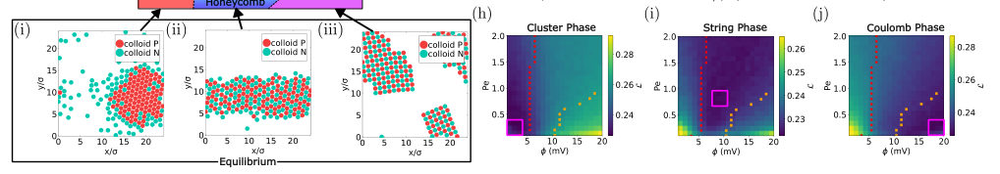
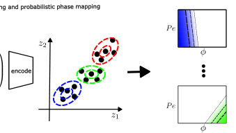
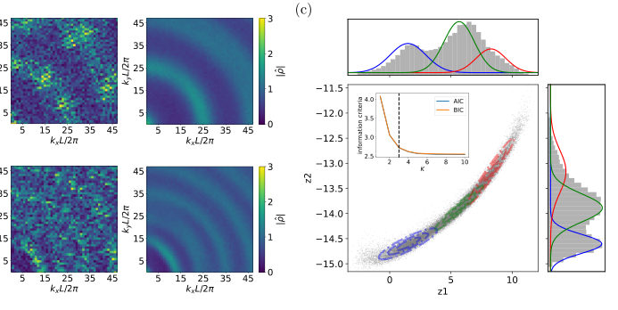

Highlighted author(s): Susanne F. Yelin, Helmut Ritsch
Authors: Anna Bychek, Martin Fasser, Ivan Vybornyi, Klemens Hammerer, Susanne F. Yelin, Helmut Ritsch, Raphael Holzinger
Type: theory · Category: other · PDF: https://arxiv.org/pdf/2607.06556v1
Analysis basis: full PDF text, analyzed in chunks
Topic relevance: 🔥 Dicke superradiance 4/5 · 🔥 methods for driven-dissipative 4/5 · 🔥 superradiant laser 4/5 · Tavis-Cummings & cavity-many-emitter 3/5 · correlated / nonlocal dissipation 3/5 · correlated cavity matter 3/5 · driven-dissipative phase transition 3/5 · non-equilibrium dynamics 3/5 · Keldysh / 2PI / non-Gaussian methods 2/5 · analog quantum simulation 2/5 · non-equilibrium universality 2/5 · entanglement & information structure 1/5 · free-space correlated emission 1/5 · interference shaping light 1/5 · quantum measurements 1/5
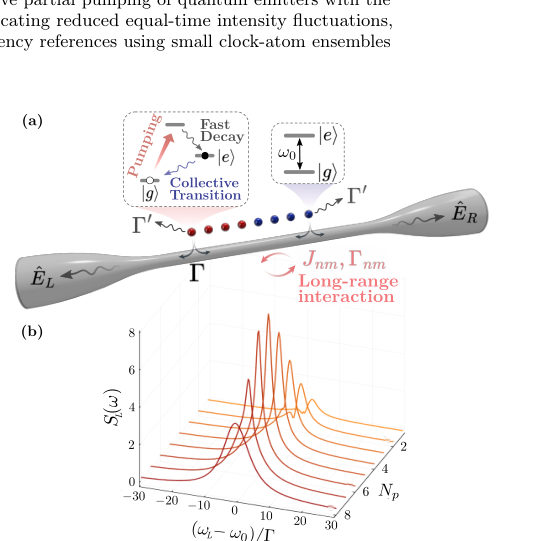
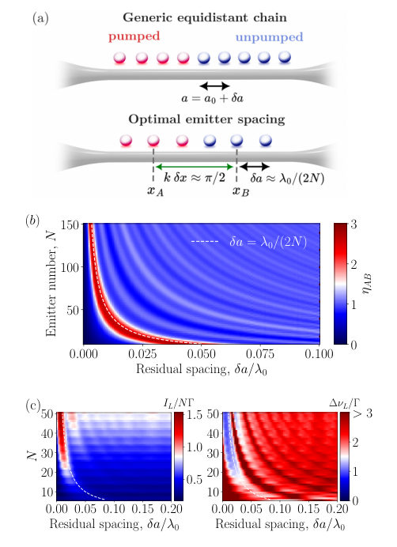
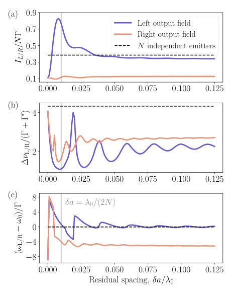
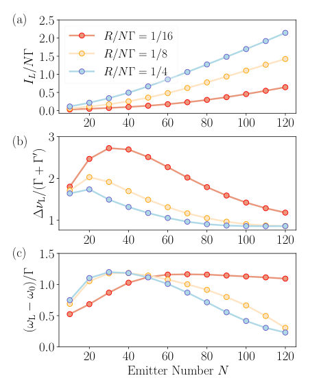
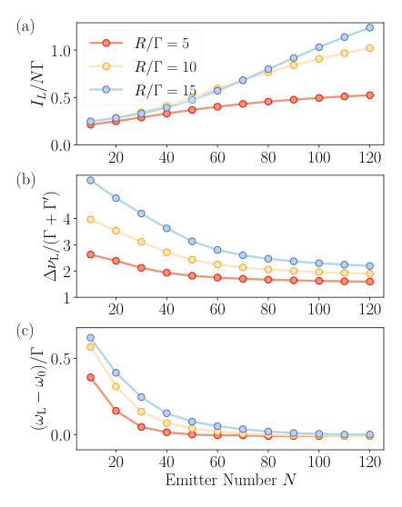
Summary. The paper proposes using an array of quantum emitters coupled to a nanophotonic waveguide to create stable, narrow-linewidth optical frequency references. By selectively pumping only part of the ensemble, the unpumped atoms provide collective feedback that enhances coherence. This method demonstrates a route to chip-scale precision metrology by achieving superradiance in a continuous, controlled manner.
Why it may be interesting. This work provides a detailed theoretical framework for engineering quantum light sources by controlling emitter interactions via waveguide geometry and selective excitation, which is highly relevant to open quantum systems and cavity QED research.
Main problem. The primary goal is to achieve continuous, narrow-linewidth coherent emission from an ensemble of quantum emitters, overcoming the limitations of transient superradiant bursts.
Main result. Selective partial pumping of a sub-ensemble of emitters allows for directional superradiant emission with a narrow output spectrum near the bare emitter resonance frequency.
Method. The analysis employs the Lindblad master equation and utilizes second-order cumulant expansions to model the non-equilibrium steady state dynamics of the coupled system.
Model / system. The system consists of $N$ two-level quantum emitters coupled to a single-mode, bidirectional nanophotonic waveguide reservoir. The dynamics are governed by an effective Hamiltonian incorporating dipole-dipole interactions mediated by the waveguide.
Key observables. Spectral linewidth (FWHM), zero-delay second-order correlation function ($g^{(2)}(0)$), and directional emission intensity asymmetry ($I_L/R$).
Important parameters / regimes. The optimal operating regime is achieved when the pumped and unpumped sub-ensembles are of comparable size, leading to specific residual phases ($\phi_{ ext{opt}}$).
Assumptions / limitations. Approximations include neglecting free-space dipole interactions ($a_0 \gg \lambda_0$) and using cumulant expansions for large ensembles.
Figures summary. Figures illustrate the spectral narrowing achieved via partial pumping, showing optimal performance when pumped fractions are near half the total emitters. Other figures detail directional emission asymmetry based on emitter spacing.
Paper structure. The paper builds from the general master equation description to analyzing specific coupling mechanisms (partial pumping), deriving analytical expressions for correlation functions, and finally presenting results demonstrating spectral narrowing and directional control.
Superradiant lasers promise continuous, narrow-linewidth coherent emission at the bare atomic transition frequency, enabling frequency references of exceptional precision. Recent experiments have advanced the field, but achieving truly continuous operation remains technically challenging. Here we propose an alternative route to an active optical frequency reference with fewer emitters using all-to-all dipole-dipole interactions mediated by a nanophotonic waveguide. We show that selectively pumping only a sub-ensemble of emitters, rather than the full ensemble, substantially improves emission characteristics. The collective interactions with unpumped emitters provide narrowband frequency selection and establish an effective feedback mechanism analogous to the role of a macroscopic cavity. We find directional superradiant emission with strongly phase-synchronized emitter correlations and a narrow output spectrum close to the bare emitter resonance. Our results demonstrate a strong metrological gain from selective partial pumping of quantum emitters with the second-order intensity correlation $g^{(2)}(0)\simeq 1$, indicating reduced equal-time intensity fluctuations, and open a route to waveguide-based optical frequency references using small clock-atom ensembles for chip-scale precision metrology.
Highlighted author(s): Giovanna Morigi
Authors: Jannis Melles, Hartmut Löwen, Benno Liebchen, Michael te Vrugt, Giovanna Morigi, Artur Widera, Alexander P. Antonov
Type: theory · Category: statistical mechanics · PDF: https://arxiv.org/pdf/2607.06071v1
Analysis basis: full PDF text, analyzed in chunks
Topic relevance: methods for driven-dissipative 3/5 · non-equilibrium dynamics 3/5 · non-equilibrium universality 2/5 · Keldysh / 2PI / non-Gaussian methods 1/5 · correlated / nonlocal dissipation 1/5 · driven-dissipative phase transition 1/5
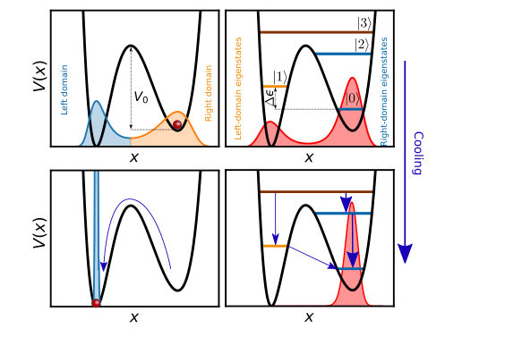
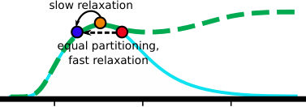
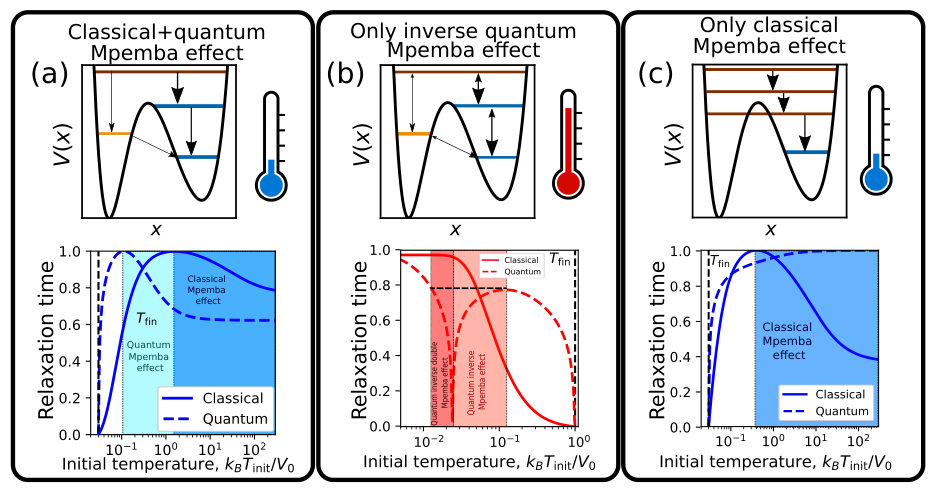
Summary. The paper theoretically explores the quantization of the Mpemba effect using a bistable potential model. It demonstrates that moving from classical to quantum descriptions fundamentally alters the cooling dynamics, predicting novel effects like inverse and double inverse Mpemba behavior at ultra-low temperatures. This establishes quantization as a robust mechanism for observing anomalous thermal relaxation inaccessible classically.
Why it may be interesting. This work directly addresses non-equilibrium statistical mechanics in open quantum systems, providing concrete predictions for anomalous relaxation phenomena accessible only through quantum coherence or dissipation mechanisms.
Main problem. The paper investigates the Mpemba effect—the counterintuitive phenomenon of faster cooling for initially hotter systems—by analyzing its behavior when quantized.
Main result. Quantization shifts the Mpemba effect to ultra-cold temperatures and generates novel quantum phenomena, such as inverse and double inverse Mpemba effects, absent in classical dynamics.
Method. The analysis compares classical thermal evolution (using Boltzmann weights) with quantum relaxation governed by Lindblad master equations and spectral decomposition of the Liouvillian operator.
Model / system. The study uses the paradigmatic benchmark of an asymmetric bistable potential, modeling both classical thermal states and quantum dissipative dynamics.
Key observables. Domain occupation probabilities ($P_L(T)$ or $P_1(T)$), relaxation time ($ au$), and the trace distance quantifying approach to steady state.
Important parameters / regimes. Temperature (especially ultra-cold regimes), potential barrier height ($V_0$), and coupling strength determining weak vs. strong coupling limits.
Assumptions / limitations. The analysis relies on single-mode approximations for relaxation dynamics and assumes the existence of weakly coupled states to observe quantum effects.
Figures summary. Figures illustrate the non-monotonic temperature dependence required for the Mpemba effect in both classical (Fig. 2) and quantum settings, showing different regimes like inverse or double inverse effects.
Paper structure. The paper progresses by establishing the classical benchmark using thermal barrier crossing, then introduces quantization via Lindblad dynamics, deriving the time evolution of population imbalance, and finally comparing the resulting temperature dependencies to highlight novel quantum regimes.
The Mpemba effect refers to the counterintuitive phenomenon that an initially hot system can freeze faster than an initially warm one. Recent years have brought major advances in both classical and quantum realizations, with the asymmetric bistable potential emerging as the paradigmatic classical benchmark because its mechanism is especially transparent and controllable. Yet for precisely this benchmark problem, the impact of quantization remains unexplored. Here we show that quantization shifts Mpemba behavior to qualitatively new regimes, moving it to ultra-cold temperatures that are orders of magnitude lower than those relevant for classical thermal barrier crossing. In addition, quantization produces inverse and double inverse Mpemba effects that are absent in the corresponding classical dynamics. Our results establish quantization as a robust route to quantum-enabled Mpemba effects inaccessible in classical regimes.
Highlighted author(s): Alexey V. Gorshkov
Authors: Daniel J. Spencer, Kaiyan Shi, Emil T. Khabiboulline, Gorjan Alagic, Alexey V. Gorshkov
Type: theory · Category: quantum information and computing · PDF: https://arxiv.org/pdf/2607.06521v1
Analysis basis: full PDF text, analyzed in chunks
Topic relevance: entanglement & information structure 1/5 · quantum measurements 1/5
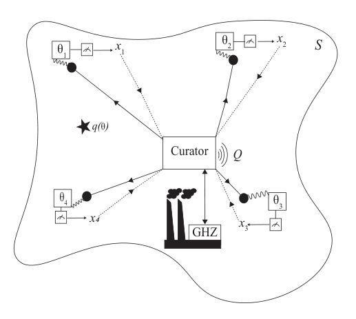
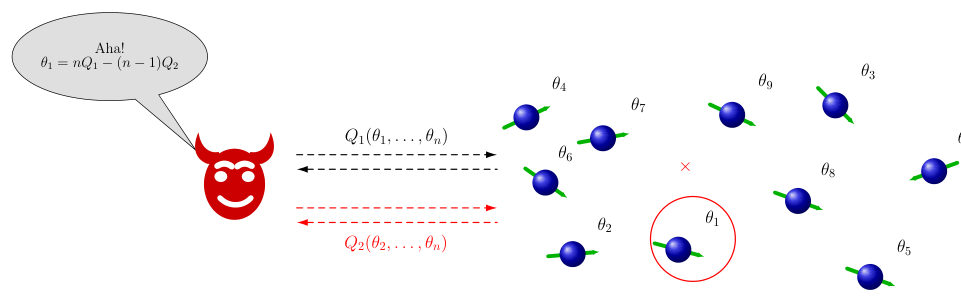
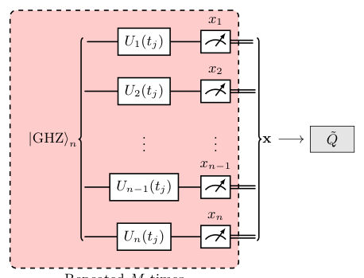
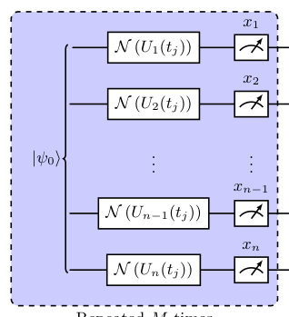
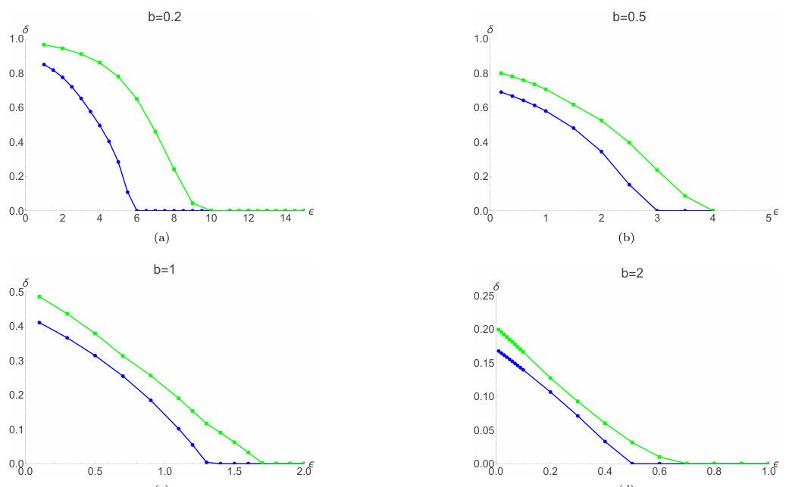
Summary. This paper addresses the critical need for privacy protection in high-precision quantum sensors. It develops novel protocols that successfully combine differential privacy guarantees with the superior Heisenberg scaling of measurement accuracy. The research provides a detailed understanding of the trade-offs, showing how to maintain optimal performance while rigorously hiding sensitive input data.
Why it may be interesting. This work is highly relevant as it merges quantum estimation theory (Heisenberg limit) with modern privacy techniques (Differential Privacy), providing a blueprint for secure quantum data processing that could be applied in sensitive fields like biomedical sensing.
Main problem. The core problem is developing quantum sensing protocols that can estimate unknown functions with high precision while simultaneously guaranteeing strong privacy protection against adversaries.
Main result. The authors introduce secure, differentially private sensing protocols that successfully reconcile the Heisenberg-limited scaling of measurement error ($O(1/n^2)$) with constant differential privacy ($\epsilon=O(1)$) in local settings under specific assumptions.
Method. The work involves modifying quantum sensing Hamiltonians to inject controlled noise and applying advanced information-theoretic tools, such as analyzing the resulting probability distributions via Gamma functions, to bound the privacy leakage.
Model / system. The model is an entangled quantum sensor network (using qubits) designed for function estimation $q( heta)$. The system evolution is governed by a Hamiltonian that includes both the sensing parameters ($ heta$) and injected noise terms ($\eta$).
Key observables. Mean-Squared Error ($\epsilon ext{MSE}$) of the function estimate, $(\epsilon, \delta)$-differential privacy level, and the scaling factor $\alpha$ governing error decay.
Important parameters / regimes. The network size ($n$), the noise scale parameter ($b$), and the precision/number of bits ($K$) are critical parameters determining the trade-off between utility and privacy.
Assumptions / limitations. Key results rely on assuming a common source of randomness (CSR) and that a constant fraction of nodes are honest for local implementability. The analysis also distinguishes itself from prior work by focusing on sensing protocols rather than just state input privacy.
Figures summary. Figure 5 illustrates the relationship between failure probability ($\delta$) and privacy level ($\epsilon$) for different noise levels ($b$) and precision ($K$), showing how increasing precision increases the required $\epsilon$.
Paper structure. The paper follows a structure of defining necessary criteria, reviewing existing theory on classical/quantum DP, introducing centralized and decentralized protocols (including noisy Hamiltonian modifications), and concluding with detailed analysis of scaling laws.
Quantum sensing is a promising technology capable of demonstrating clear advantage over comparable classical techniques for precise measurement. One application of quantum sensing is in function estimation, which can be done using a network of entangled quantum sensors, allowing for measurements with greater optimal sensitivity than unentangled sensing protocols. In cases where quantum sensor networks will be used to measure data that should remain private (e.g., biomedical data), it is imperative that these protocols include a privacy mechanism to hide sensitive information. In this work, we show that entangled sensor networks are vulnerable to certain privacy-violating attacks. To mitigate these attacks, we introduce secure sensing protocols endowed with differential privacy. We reconcile differential privacy with retaining Heisenberg-limited scaling, and introduce several protocols achieving varying balances between the two. We show that our main protocol, an $n$-node network sensing protocol that injects noise directly into the sensing Hamiltonian, exhibits a tradeoff between the desirable $O(1/n^2)$ Heisenberg scaling of the mean-squared error of the function estimate and the level of privacy attainable. Under assumptions on the network (a common source of randomness and a constant fraction of honest parties), we show that this protocol is locally implementable and achieves $(O(1), δ)$-differential privacy for arbitrarily small $δ$ while retaining Heisenberg scaling of the mean-squared error. We prove that our protocols are resilient to attacks by broad classes of classical and quantum adversaries, and find advantages in the privacy-utility tradeoff when using quantum techniques.
Authors: Giuliano Chiriacò
Type: theory · Category: strongly correlated electrons · PDF: https://arxiv.org/pdf/2607.06293v1
Analysis basis: full PDF text, analyzed in chunks
Topic relevance: 🔥 methods for driven-dissipative 5/5 · 🔥 non-equilibrium dynamics 4/5 · Keldysh / 2PI / non-Gaussian methods 3/5 · driven-dissipative phase transition 3/5 · quantum measurements 3/5 · Kondo & dissipative impurity 2/5 · measurement-induced transitions 2/5 · analog quantum simulation 1/5 · correlated / nonlocal dissipation 1/5 · correlated cavity matter 1/5 · non-equilibrium universality 1/5
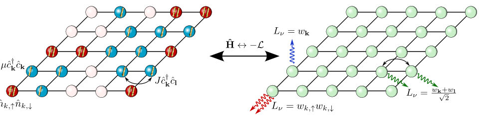
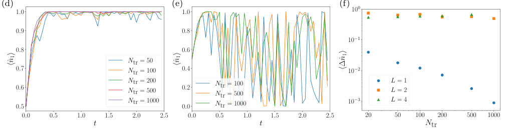
Summary. The paper develops a method to calculate strongly correlated fermionic ground states by reformulating the problem as finding the steady state of an open quantum system governed by dissipative dynamics. By mapping the Hamiltonian onto Majorana fermion jump operators, they achieve efficient polynomial scaling for individual trajectories. However, the necessity of handling non-Markovian effects introduces a sign problem, leading to overall exponential computational complexity.
Why it may be interesting. This work provides a powerful, albeit computationally challenging, formal link between equilibrium many-body physics (ground states) and non-equilibrium open system dynamics. The use of Gaussian representations to simplify trajectory simulation is highly relevant for theoretical condensed matter modeling.
Main problem. The paper addresses calculating the ground state of interacting fermionic Hamiltonians by mapping this problem onto finding the non-equilibrium steady state (NESS) of a purely dissipative open quantum system.
Main result. While individual quantum trajectories can be simulated efficiently using Gaussian representations, the overall computational cost remains exponentially hard due to the sign problem inherent in unravelling the necessary non-Markovian dynamics.
Method. The authors employ a mapping from fermionic Hamiltonians (like Fermi-Hubbard) to Lindblad jump operators acting on Majorana fermions. They utilize quantum trajectory methods adapted for non-Markovian processes, leveraging Gaussianity preservation along individual paths.
Model / system. The system models strongly correlated fermions using the Fermi-Hubbard Hamiltonian. The dynamics are treated as an open quantum system governed by a Lindblad master equation, which exhibits intrinsic non-Markovian behavior when particle number is finite.
Key observables. Expectation values of fermionic operators ($\langle \hat{O} angle$), the steady state density matrix ($ ho_\infty$), and the covariance matrix ($\Gamma_{kl}$) describing Gaussian states.
Important parameters / regimes. Negative dissipative rates (indicating non-Markovianity), system size ($L$), and particle number constraints.
Assumptions / limitations. The primary assumption enabling polynomial scaling for individual trajectories is that hopping and interaction terms map to jump operators preserving the Gaussianity of Majorana fermions. The main limitation noted is the exponential complexity arising from the required ensemble average over non-Markovian trajectories.
Figures summary. Figure 1 sketches the mapping from the Fermi-Hubbard model to a dissipative OQS of Majorana fermions, showing term mappings to jump operators. Table I details this Hamiltonian-to-Lindbladian operator mapping.
Paper structure. The paper establishes the theoretical mapping between ground states and NESSs. It then develops the quantum trajectory formalism for these non-Markovian dynamics, deriving evolution equations for correlation matrices and demonstrating the computational scaling challenges associated with convergence.
We introduce a mapping between the ground state of interacting fermionic Hamiltonians and the non-equilibrium steady state of a purely dissipative open quantum system. Within the framework of third quantization, we map the Fermi-Hubbard Hamiltonian onto Lindblad jump operators acting on Majorana fermions. Remarkably, both hopping and interaction terms map onto jump operators that preserve the Gaussianity of Majorana fermions along individual quantum trajectories. As a result, the dynamics can be unravelled and each trajectory can be simulated efficiently using only two-point correlation functions, with a computational cost that scales polynomially with system size. We further show that finite particle number requires negative dissipative rates, leading to an intrinsically non-Markovian dynamics. The corresponding trajectory unravelling involves both positive and negative stochastic weights and exhibits a sign problem and large fluctuations, so that convergence requires an exponentially large number of trajectories. The overall computational cost remains exponential in system size despite the efficient Gaussian representation of individual trajectories, but is crucially dependent on the computational complexity of the non-Markovian unravelling, motivating further studies on the efficiency of such unravellings.
Authors: Sriram Akella, Norihiro Iizuka, Akihiro Miyata
Type: theory · Category: quantum information and computing · PDF: https://arxiv.org/pdf/2607.06050v1
Analysis basis: full PDF text, analyzed in chunks
Topic relevance: 🔥 entanglement & information structure 5/5 · analog quantum simulation 3/5 · exotic spin models in light-matter 1/5 · non-equilibrium dynamics 1/5
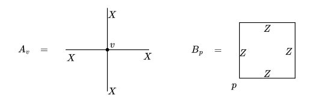
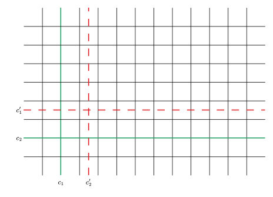
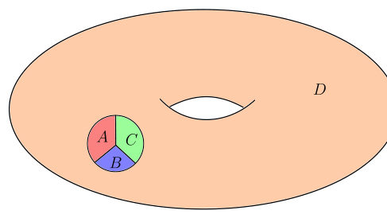
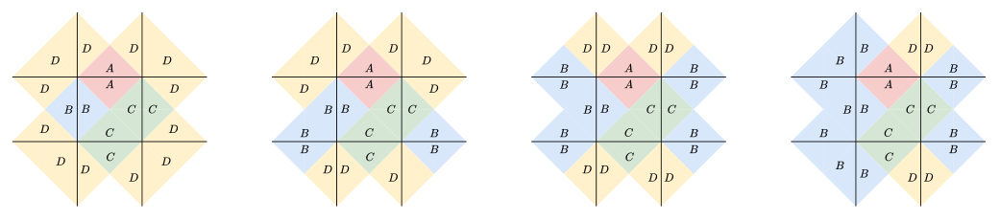
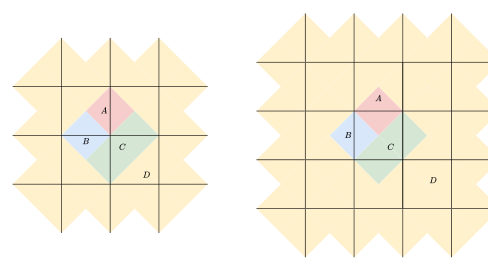
Summary. The paper uses Genuine Multi-Entropy on the Toric Code to probe multipartite entanglement. It finds that while this measure often reduces to lower-order information for simple states, a specific high-order measurement ($n=4$) remains sensitive to the underlying topology, suggesting GM is a powerful diagnostic tool beyond TEE.
Why it may be interesting. This work directly addresses fundamental questions about entanglement structure in topologically ordered systems, providing new quantitative tools (GM) to distinguish between different types of multipartite correlations beyond standard entropy measures.
Main problem. The study investigates genuine multi-entropy (GM) as a diagnostic tool to determine if it captures irreducible multipartite entanglement information beyond what is contained in conventional lower-party entropic measures like Topological Entanglement Entropy (TEE).
Main result. For the Toric Code stabilizer states, GM shows complex behavior: while low-$n$ indices ($n=2, 3$) collapse to lower-partite data proportional to $I_3$, the $n=4$ index reveals a genuine topological invariant that distinguishes itself from this reduction.
Method. The authors employ theoretical analysis on exactly solvable models (Toric Code) and calculate R\'enyi multi-entropies for various partitions, comparing results across different replica indices ($n$) to test for entanglement structure redundancy.
Model / system. The primary model is the Toric Code, a lattice realization of a topologically ordered phase. The analysis focuses on ground states (stabilizer and general superpositions) defined by local Pauli operators acting on a torus manifold.
Key observables. Genuine Multi-Entropy ($ ext{GM}(q=4)_n$), Topological Entanglement Entropy (TEE), Tripartite Information ($I_3$).
Important parameters / regimes. Replica index $n$, number of parties $q$ (specifically $q=4$), and the topological genus of the manifold.
Assumptions / limitations. The analysis relies on comparing results derived from stabilizer states versus general superpositions, and assuming that specific deformations do not cross non-contractible cycles when establishing topological invariance for $I_3$.
Figures summary. Figures illustrate the physical setup using star and plaquette operators on a torus, showing various partitions (e.g., Kitaev–Preskill disk) used to define entanglement boundaries.
Paper structure. The paper progresses by first defining GM in the context of topological order, analyzing its behavior for stabilizer states at different replica indices ($n$), contrasting this with general state superpositions, and finally establishing $I_3$ as a robust topological invariant via deformation arguments.
We study genuine multi-entropy as a diagnostic of multipartite entanglement in the toric code, which provides a controlled setting for probing multipartite structures in topologically ordered states. Our main question is whether genuine multi-entropy captures information that is not reducible to conventional lower-party entropic data, such as topological entanglement entropy. We first analyze toric-code ground states that admit a stabilizer-state description, where the relevant quantities can be evaluated exactly. In this sector, genuine multi-entropy reflects the topological structure and symmetries of the toric code, while exhibiting highly constrained relations to lower-party multi-entropies. We conjecture that, for stabilizer states and ${q}\ge4$, the ${q}$-partite genuine multi-entropy at replica index $n<{q}$ collapses to a linear combination of multi-entropies involving at most ${q}-2$ parties. We establish this pattern explicitly for ${q}=4$ in the toric code stabilizer sector: for $n=2,3$, the genuine multi-entropy is proportional to the tripartite information $I_3$ and, for the Kitaev--Preskill partition, contains no independent genuine four-partite information beyond that captured by the topological entanglement entropy. At $n=4$, however, this reduction breaks down: the genuine multi-entropy is no longer proportional to $I_3$, but remains a topological invariant of the toric-code stabilizer ground states. For generic non-stabilizer superpositions within the ground-state manifold and for coherent superpositions of local excitations, the low-$n$ reduction also fails. These results show that genuine multi-entropy probes multipartite entanglement structure beyond the tripartite information, and hence beyond the topological entanglement entropy in the Kitaev--Preskill partition, whereas for stabilizer states at low replica index it reduces to lower-partite entropic data.
Authors: Frank Yang, Parth S. Shah, Chaitali Joshi, Mohammad Mirhosseini
Type: both · Category: other · PDF: https://arxiv.org/pdf/2607.05760v1
Analysis basis: full PDF text, analyzed in chunks
Topic relevance: 🔥 analog quantum simulation 4/5 · 🔥 correlated / nonlocal dissipation 4/5 · 🔥 methods for driven-dissipative 4/5 · Tavis-Cummings & cavity-many-emitter 3/5 · correlated cavity matter 3/5 · driven-dissipative phase transition 3/5 · entanglement & information structure 3/5 · non-equilibrium dynamics 2/5 · non-equilibrium universality 2/5 · quantum optics experiment 2/5 · Keldysh / 2PI / non-Gaussian methods 1/5 · QC/QI experiment 1/5 · exotic spin models in light-matter 1/5 · interference shaping light 1/5 · quantum measurements 1/5
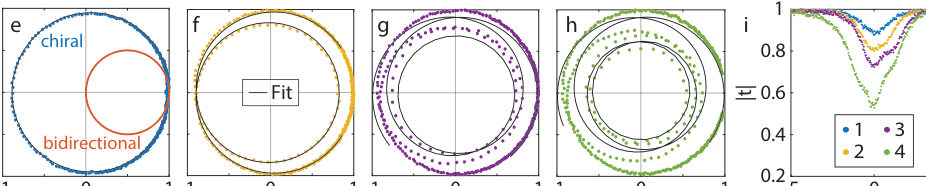
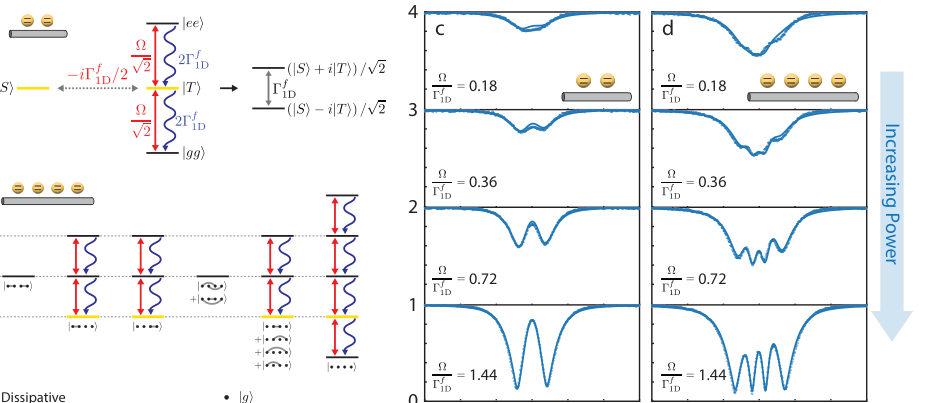
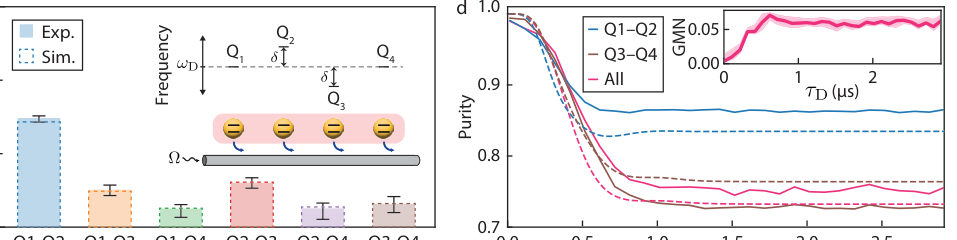
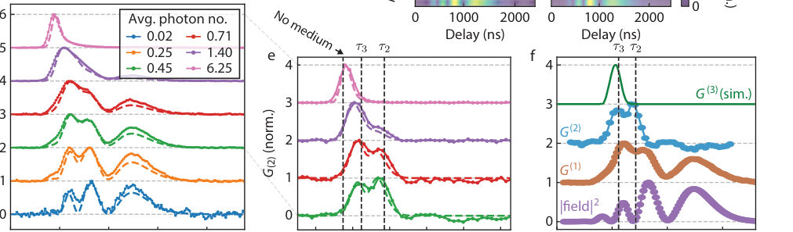
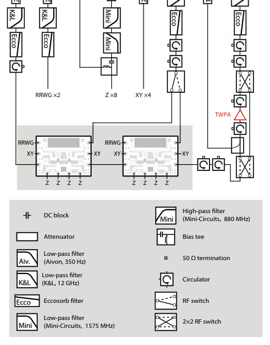
Summary. The research reports the experimental creation and characterization of a cascaded network of superconducting qubits designed to mimic chiral quantum emitters. By engineering directional coupling, the system accesses novel many-body physics regimes in light-matter interaction. This work is significant because it demonstrates entanglement and photon correlation signatures unattainable in standard, reciprocal quantum optical setups.
Why it may be interesting. This work provides a concrete experimental realization of chiral cavity QED systems, which are crucial testbeds for understanding non-reciprocal light-matter interactions that cannot be simulated by standard reciprocal waveguide models.
Main problem. The core challenge is realizing and experimentally accessing many-body quantum light-matter interaction regimes mediated by photons in a highly directional, or chiral, manner.
Main result. The authors successfully demonstrated a cascaded superconducting qubit network exhibiting genuine multipartite entanglement and observing photon number sorting, confirming access to physics beyond reciprocal systems.
Method. The work combines theoretical modeling using master equations (Liouvillians) with experimental characterization of transmission coefficients and entanglement witnesses on the physical chip.
Model / system. The system is a cascaded chain of superconducting qubits coupled to a shared microwave waveguide, engineered to exhibit chirality by breaking time-reversal symmetry. The dynamics are modeled using master equations incorporating forward/backward decay channels.
Key observables. Complex transmission phase accumulation ($2\pi N$), genuine multipartite negativity (GMN), and temporal sorting of output photons based on photon number.
Important parameters / regimes. The system operates in a regime characterized by strong, directional coupling ($\eta_d \sim 100$) and is sensitive to the relative phases imparted by parametric drives.
Assumptions / limitations. Theoretical analysis often assumes perfect chirality (zero backward decay) or relies on low-power approximations using ABCD matrices for tractability.
Figures summary. Figures illustrate the four-qubit chain architecture, measured complex transmission showing phase accumulation with qubit number, and output light sorted in time according to photon number.
Paper structure. The paper progresses from establishing the physical platform (superconducting qubits) and demonstrating directional coupling signatures, to theoretically modeling the full quantum dynamics via master equations, and finally confirming advanced phenomena like entanglement stabilization and photon-photon interaction signatures.
Chiral quantum emitters interact with light only in one propagation direction, allowing them to be linked into cascaded systems in which photons mediate ordered, long-range interactions. Such systems are predicted to host novel regimes of many-body physics of light and matter. Exploring these regimes requires arrays of identical quantum emitters with directional, low-loss coupling to guided photons, a combination that has thus far remained experimentally out of reach. Here we realize a cascaded network of superconducting qubits using an architecture that overcomes these bottlenecks. We implement a four-qubit chain spanning two modules, with separations ranging from millimeters to half a meter, and exploit the shared waveguide as a dissipative resource to stabilize reconfigurable entanglement, reaching a genuinely multipartite regime unavailable in reciprocal baths. By scattering weak pulses off the chain, we observe photons sorted in time by photon number, a signature of the strong photon-photon interactions mediated by the emitters. Together, these results provide experimental access to many-body light-matter regimes that are beyond the reach of reciprocal systems.
Authors: Adel Ali, Alexey Belyanin
Type: theory · Category: other · PDF: https://arxiv.org/pdf/2607.05581v1
Analysis basis: full PDF text, analyzed in chunks
Topic relevance: 🔥 measurement-induced transitions 4/5 · Keldysh / 2PI / non-Gaussian methods 3/5 · correlated / nonlocal dissipation 3/5 · driven-dissipative phase transition 3/5 · methods for driven-dissipative 3/5 · quantum measurements 3/5 · entanglement & information structure 2/5 · non-equilibrium universality 2/5 · spintronics-quantum-optics interface 2/5 · Kondo & dissipative impurity 1/5 · QC/QI experiment 1/5 · analog quantum simulation 1/5 · correlated cavity matter 1/5 · exotic spin models in light-matter 1/5 · non-equilibrium dynamics 1/5
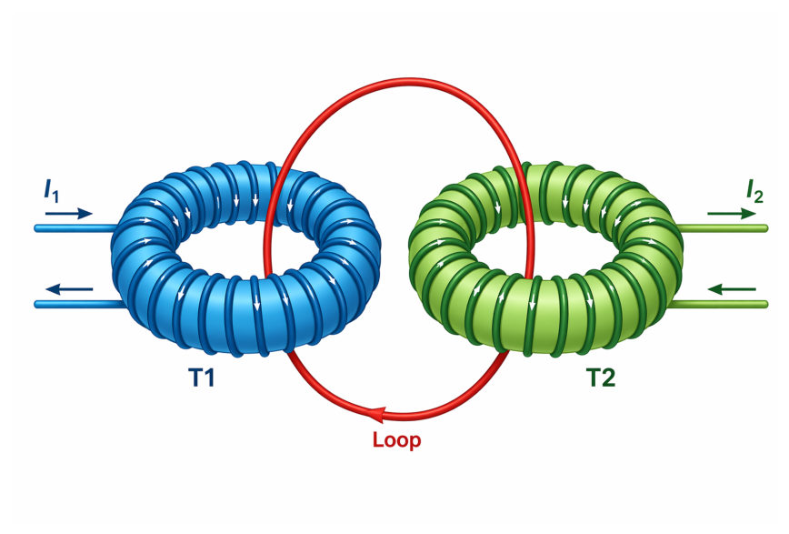
Summary. This work proposes an experiment to transfer quantized magnetic flux nonlocally between superconducting toroids using only the global topological constraint. Theoretically, it develops a covariant master equation describing how long-range quantum coherence decays in such systems. It is significant because it connects measurable circuit physics to deep questions about wavefunction collapse and fundamental limits on quantum correlation.
Why it may be interesting. It bridges condensed matter physics (superconducting circuits) with foundational quantum foundations (collapse models), offering a tangible, measurable platform for testing abstract concepts like spatiotemporal coherence bounds.
Main problem. The paper proposes a nonlocal experiment to coherently transfer quantized magnetic flux between separated superconducting toroids, while simultaneously developing a covariant framework to test fundamental questions about spatiotemporal quantum coherence and wavefunction collapse.
Main result. The interaction is mediated by the global topological fluxoid constraint, leading to coupled normal modes. The theoretical development provides a gauge-invariant master equation describing decoherence based on condensate current rather than simple mass density localization.
Method. The analysis combines solving classical equations of motion for coupled harmonic oscillators (flux qubits) with deriving and specializing a covariant collapse evolution equation from the Tomonaga–Schwinger formalism.
Model / system. The system involves two toroidal superconducting structures linked by a common loop, modeled using fluxoid variables ($\hat{\Phi}$). The theoretical framework extends to a general covariant collapse law applied to condensate density matrices on a spacelike hypersurface.
Key observables. Correlated, time-resolved flux exchange between remote toroids; null measurement of magnetic-field leakage in the intervening region; mode splittings ($\Omega_{\pm}$); and the one-body density matrix $G^{(1)}( heta, heta'; t)$.
Important parameters / regimes. Inductance ($L$), coupling strength ($J_{zz}$), collapse parameters ($\gamma_0$, $\chi_{ ext{cov}}$), and characteristic length scales ($\ell$).
Assumptions / limitations. The nonlocal interaction is assumed to be mediated purely by the global fluxoid constraint, not local fields. The covariant collapse model is presented as a phenomenological extension of existing quantum mechanics.
Figures summary. Figure 1 schematically illustrates two toroids linked by a loop for flux measurement; other figures detail mathematical derivations related to normal modes and density matrix evolution.
Paper structure. The paper progresses from proposing the physical nonlocal experiment (flux transfer) using coupled harmonic oscillators, deriving the resulting Hamiltonian structure, and then generalizing this into a covariant quantum field theory framework to model coherence loss in the context of fundamental collapse mechanisms.
We propose a nonlocal flux-transfer experiment in which a quantized magnetic-field excitation confined within one toroidal superconducting structure is coherently transferred to a spatially separated toroid without magnetic-field occupation of the intervening region. The transfer arises from quantized Aharonov-Bohm-type vector potential coupling mediated by a superconducting loop threading the toroids, which, however, remains in the ground state, acting only through a global fluxoid constraint. A direct experimental signature would be the observation of correlated, time-resolved flux exchange between remote toroids in a SQUID readout. We analyze an apparent signaling paradox related to this interaction as a probe of the broader question of whether spatiotemporal quantum coherence is fundamentally bounded. The proposed setup can provide an experimental testbed for addressing foundational questions such as the existence of an objective collapse of a wavefunction or the fundamental limits of macroscopic quantum coherence which is relevant to large scale quantum computers.
Authors: Sonali Brahma, Trishna Kalita, Himangshu Prabal Goswami
Type: theory · Category: other · PDF: https://arxiv.org/pdf/2607.06215v1
Analysis basis: full PDF text, analyzed in chunks
Topic relevance: 🔥 methods for driven-dissipative 4/5 · Tavis-Cummings & cavity-many-emitter 3/5 · correlated cavity matter 3/5 · driven-dissipative phase transition 3/5 · non-equilibrium dynamics 3/5 · correlated / nonlocal dissipation 2/5 · entanglement & information structure 2/5 · non-equilibrium universality 2/5 · Keldysh / 2PI / non-Gaussian methods 1/5 · analog quantum simulation 1/5 · measurement-induced transitions 1/5 · scars & prethermalization 1/5
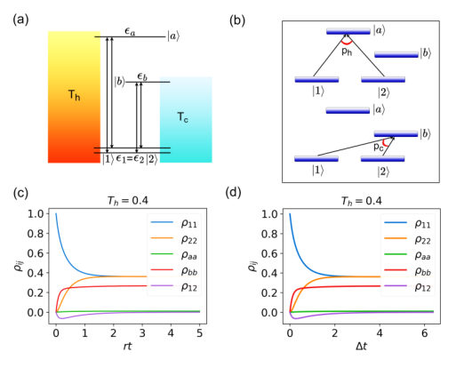
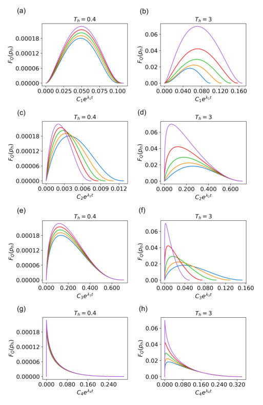
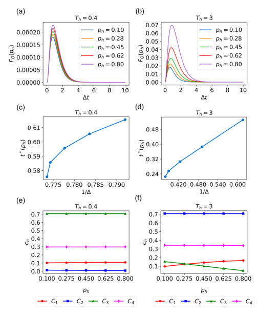
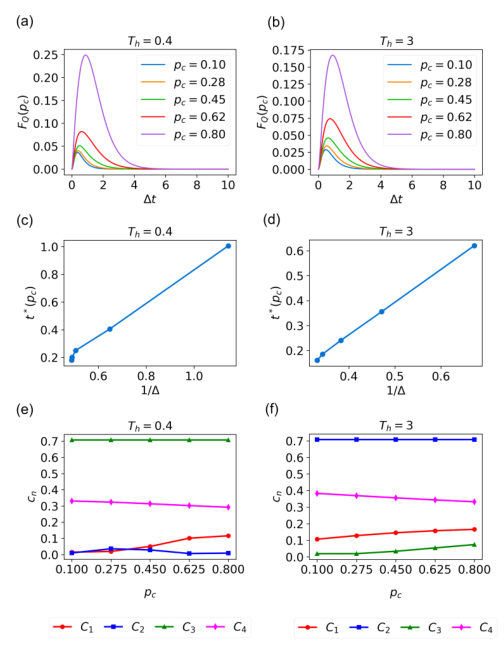
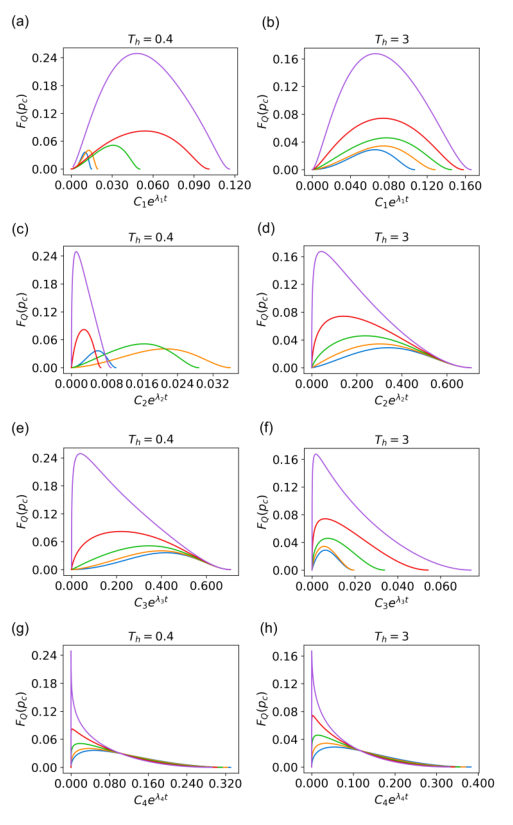
Summary. The paper rigorously investigates coherence estimation in complex, non-equilibrium quantum systems, showing that simple scaling laws based on the Liouvillian gap are insufficient. By analyzing the full spectral decomposition of the QFIM, the authors prove that optimal sensing depends on a balance between mode relaxation and statistical weight. This work establishes new criteria for understanding metrological resources in open quantum dynamics.
Why it may be interesting. This work provides crucial theoretical insight into quantum metrology limits for open systems, moving beyond simplified gap estimates to account for the full complexity of non-equilibrium dynamics and multi-mode contributions, which is highly relevant for designing robust quantum sensors.
Main problem. The study investigates how to accurately estimate bath-induced coherence (BIC) in a finite, non-equilibrium quantum system when the estimation precision is limited by dynamics beyond what is predicted by the simple Liouvillian gap.
Main result. Optimal coherence estimation time does not generally scale simply with the inverse of the Liouvillian gap; instead, it depends on the competition between the statistical weight and temporal relaxation rates of multiple contributing eigenmodes. Furthermore, coupling to a cavity can transform transient metrology into a sustained steady-state resource.
Method. The authors analyze the time evolution of the Quantum Fisher Information Matrix (QFIM) by performing spectral decomposition of the density matrix using the full Liouvillian eigenspectrum.
Model / system. The model is an open quantum V-type system interacting with thermal reservoirs (hot and cold baths), governed by a Markovian master equation ($\dot{ ho} = L ho$). The analysis extends to include coupling with a quantum cavity.
Key observables. Quantum Fisher Information Matrix (QFIM) elements, coherence parameters ($p_c, p_h$), and the optimal interrogation time ($t^*$).
Important parameters / regimes. Liouvillian gap ($\Delta$), reservoir temperatures ($T_h, T_c$), and modal expansion coefficients ($c_n$) vs. relaxation rates ($\lambda_n$).
Assumptions / limitations. The analysis relies on the Born–Markov approximation to derive the master equation; spectral decomposition is used to separate temporal (Liouvillian) and statistical contributions.
Figures summary. Figures illustrate the schematic of the open system, time evolution of density matrix elements showing coherence survival, and plots comparing QFI vs. rescaled time for different temperatures, alongside optimal time vs. inverse Liouvillian gap.
Paper structure. The paper progresses by first establishing the physical model and observables (BIC, QFI). It then critiques the standard reliance on $\propto 1/\Delta$ scaling. The core is a detailed spectral analysis showing that transient optimization depends on mode competition, culminating in demonstrating how cavity coupling can stabilize this resource.
We investigate the estimation of bath-induced coherence in a finite quantum system interacting with thermal reservoirs. Enhancement of coherence estimation is transient and the estimation precision totally disappears at the steady state despite the system retaining finite coherence. By analyzing the full Liouvillian eigenspectrum, we demonstrate that the optimal sensing window emerges from the competition between identifiable contributory modes' temporal relaxation and statistical importance. Neither is the linear inverse scaling of Liouvillian gap with transient optimal time a signature of unimodal contribution to optimal sensing, nor is the existence of multimodal dynamics a signature of nonlinear scaling. The inverse Liouvillian gap does not obey any general scaling with the optimal sensing time of coherence and we prove our numerical results analytically using a general Markovian framework. We further show that coupling the finite system to a quantum cavity and maintaining a thermal bias, transforms the transient metrological optimization into a sustained steady-state resource.
Authors: Diana A. Chisholm
Type: theory · Category: quantum information and computing · PDF: https://arxiv.org/pdf/2607.05519v1
Analysis basis: full PDF text, analyzed in chunks
Topic relevance: 🔥 methods for driven-dissipative 4/5 · correlated / nonlocal dissipation 3/5 · non-equilibrium dynamics 3/5 · driven-dissipative phase transition 2/5 · quantum measurements 2/5 · Keldysh / 2PI / non-Gaussian methods 1/5 · Kondo & dissipative impurity 1/5 · entanglement & information structure 1/5 · measurement-induced transitions 1/5 · non-equilibrium universality 1/5
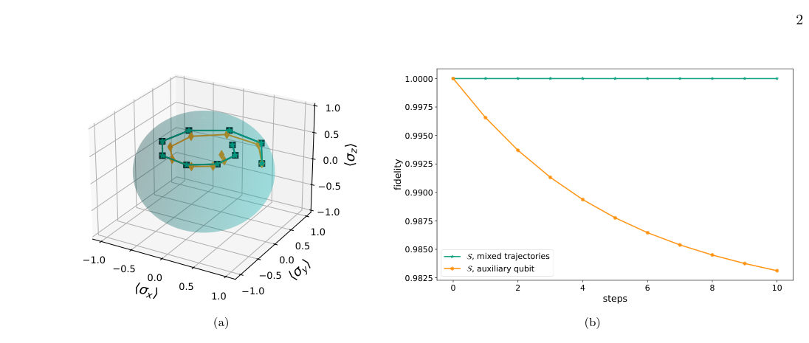
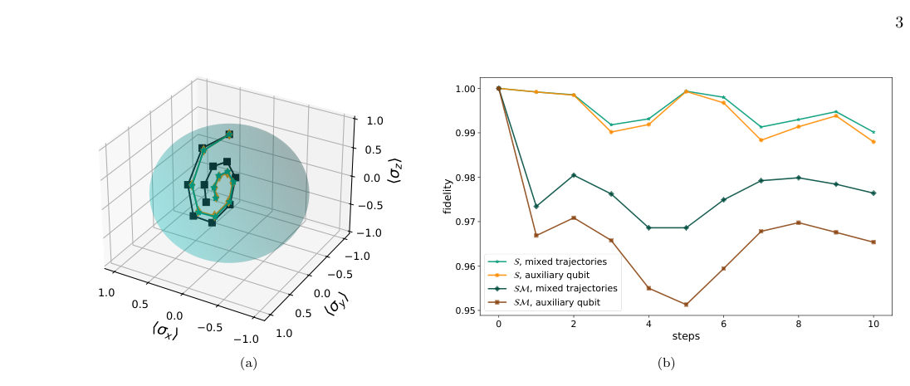
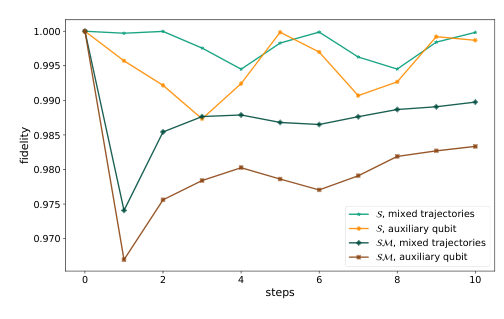
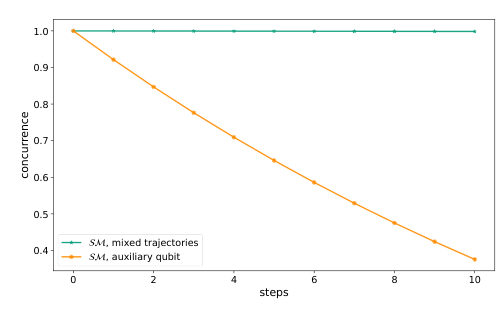
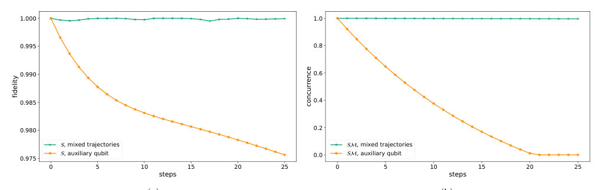
Summary. This paper introduces trajectory mixing as an efficient alternative to standard auxiliary qubit methods for simulating open quantum systems. By statistically averaging over independent pure state trajectories, it drastically reduces circuit depth and gate overheads when modeling non-Markovian dynamics under realistic quantum noise models. This makes long-time simulation of complex quantum processes more feasible on near-term hardware.
Why it may be interesting. This work provides a crucial algorithmic improvement for quantum simulation, offering a resource-efficient pathway to model realistic open system dynamics that are otherwise computationally prohibitive due to noise overheads on current hardware.
Main problem. The primary challenge is efficiently simulating non-Markovian dynamics of open quantum systems on near-term digital quantum computers while minimizing noise overheads from auxiliary qubits.
Main result. The method of trajectory mixing drastically reduces circuit depth compared to standard Stinespring dilation, yielding higher state fidelity for simulating complex, long-time non-Markovian evolutions.
Method. The authors employ trajectory mixing, which simulates the open channel as a statistical mixture of independent, pure state trajectories, avoiding the need for auxiliary qubits and associated high-overhead entangling gates.
Model / system. The work models open quantum systems undergoing non-Markovian dynamics or memory channels. Specific examples include dephasing and amplitude damping processes driven by stochastic Hamiltonians (like Random Telegraph Noise).
Key observables. State fidelity with respect to noiseless evolution, concurrence (for entanglement preservation), and the BLP measure (to confirm non-Markovianity).
Important parameters / regimes. Noise model parameters include single-qubit relaxation ($T_1$), phase loss ($T_2$), and CNOT depolarization rates. The method is restricted to mixed unitary channels.
Assumptions / limitations. The trajectory mixing approach assumes the channel is a statistical mix of unitaries with state-independent jump probabilities; furthermore, stochastic sampling (Monte Carlo) is used to circumvent the exponential scaling of total trajectories.
Figures summary. Figures compare dynamics and fidelity for dephasing/memory channels using mixed trajectories versus auxiliary qubits. Later figures show high fidelity maintenance over time steps when simulating non-Markovian evolution via a stochastic Hamiltonian.
Paper structure. The paper first introduces the limitations of standard simulation techniques (Stinespring dilation). It then proposes and demonstrates trajectory mixing for simple dephasing, extends this to memory channels using concurrence analysis, and finally applies it successfully to complex non-Markovian dynamics driven by a stochastic Hamiltonian.
Simulating open quantum systems on digital quantum computers typically relies on the use of auxiliary qubits, resulting in overheads of noisy multi-qubit gates, that severely limit execution on near-term hardware. In this work, we explore the simulation of non-Markovian dynamics as well as memory channels leveraging the method of trajectory mixing, valid for mixed unitary channels. This allows to drastically reduce circuit depth, trading entangling gates for a statistical mixture of independent, pure state trajectories. Using a realistic noise model calibrated to modern quantum processors, we show the benefits of this approach, yielding higher state fidelity and better preservation of quantum correlations. This shows the possibility of simulating long-time non-Markovian evolutions with low noise and limited resources.
Authors: Mohamed Shaban, Mariam Kiran, Muhammad Ismail
Type: both · Category: quantum information and computing · PDF: https://arxiv.org/pdf/2607.05642v1
Analysis basis: full PDF text, analyzed in chunks
Topic relevance: 🔥 QC/QI experiment 4/5 · quantum measurements 3/5 · quantum optics experiment 3/5 · measurement-induced transitions 2/5 · analog quantum simulation 1/5 · correlated / nonlocal dissipation 1/5 · correlated cavity matter 1/5 · driven-dissipative phase transition 1/5 · entanglement & information structure 1/5 · methods for driven-dissipative 1/5 · non-equilibrium dynamics 1/5
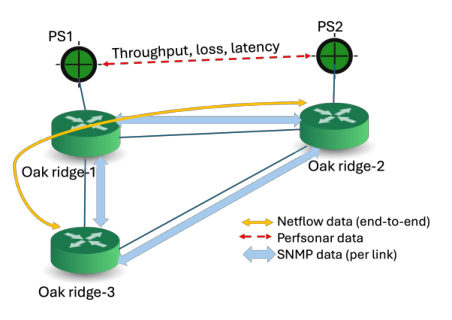
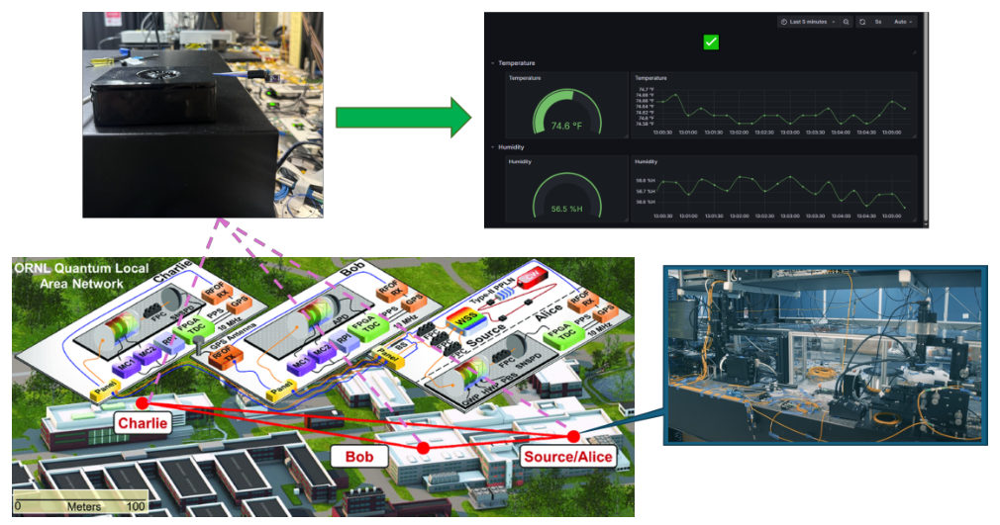
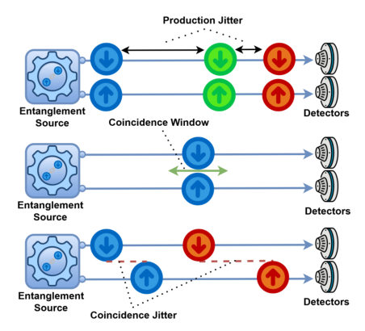
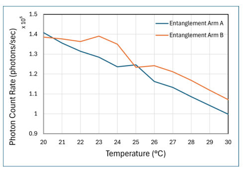
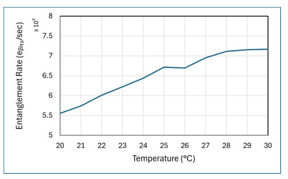
Summary. This paper develops a comprehensive monitoring framework essential for making quantum networks practical. It defines metrics covering state quality (fidelity, QBER), data rates, timing jitter, and environmental factors. By demonstrating an integrated prototype, the authors lay the groundwork for autonomous control systems in future quantum internet infrastructure.
Why it may be interesting. It provides a blueprint for operationalizing quantum hardware by treating system performance as a measurable engineering problem, which is crucial for scaling up any quantum technology.
Main problem. Standardized, comprehensive performance monitoring is necessary for quantum networks to move from research prototypes to practical deployment.
Main result. The authors propose a structured framework encompassing quality, throughput/latency, timing, and environmental metrics, validated by an integrated prototype system.
Method. They define specific metrics (e.g., fidelity, QBER) and implement a physical monitoring system using off-the-shelf components to collect both quantum and classical environmental data in real time.
Model / system. The work focuses on the operational quantum network infrastructure at Oak Ridge National Laboratory (ORNL), which uses entangled photon pairs generated via crystals for demonstration. The framework integrates this with external sensors (temperature, humidity) monitored by a Prometheus/Grafana stack.
Key observables. Entanglement fidelity ($F$), Quantum Bit Error Rate ($ ext{QBER}$), entanglement rate, link loss, dark count rate, coincidence jitter, temperature, and humidity.
Important parameters / regimes. The trade-off between detailed observability overhead and maintaining high system performance is a critical parameter space explored. Sub-nanosecond timing synchronization accuracy is also key.
Assumptions / limitations. It assumes that monitoring can be performed non-invasively without significantly degrading the quantum state or introducing excessive classical communication load.
Figures summary. Figure 1 illustrates common metrics from classical networks (perfSONAR); Figure 2 shows the ORNL quantum local area network setup involving Alice, Bob, and Charlie.
Paper structure. The paper establishes the need for standardized monitoring, details the comprehensive set of required metrics across four categories, presents an environmental monitoring prototype implementation, discusses diagnostic capabilities, and concludes by outlining challenges like overhead and control complexity.
As quantum networks move toward practical deployment, standardized performance monitoring becomes essential. This article proposes a structured monitoring framework for quantum networks with performance metrics, including quality (e.g., entanglement fidelity, QBER, loss, dark count rate), throughput and latency (e.g., entanglement rate, waiting time), timing (e.g., coincidence window, production and coincidence jitter), and exogenous factors (e.g., temperature, humidity, vibrations). These measurements enable real-time observability, benchmarking, and control, supporting use cases such as fault diagnosis, adaptive timing, and entanglement routing. Additionally, we implement a non-invasive prototype environmental monitoring system integrated with the quantum network infrastructure at Oak Ridge National Laboratory, demonstrating practical feasibility of live data collection and alert generation. Furthermore, we discuss the challenges of real-time monitoring and the trade-offs between observability and system performance. This work establishes a foundation for developing advanced quantum network monitoring systems and lays the groundwork for future autonomous control and quantum software-defined networking.
Authors: Katsuta Sakai, Nobuyuki Matsumoto
Type: both · Category: other · PDF: https://arxiv.org/pdf/2607.06431v1
Analysis basis: full PDF text, analyzed in chunks
Topic relevance: 🔥 quantum measurements 4/5 · measurement-induced transitions 3/5 · methods for driven-dissipative 3/5 · quantum optics experiment 3/5 · Keldysh / 2PI / non-Gaussian methods 1/5 · correlated / nonlocal dissipation 1/5 · driven-dissipative phase transition 1/5 · entanglement & information structure 1/5 · non-equilibrium dynamics 1/5
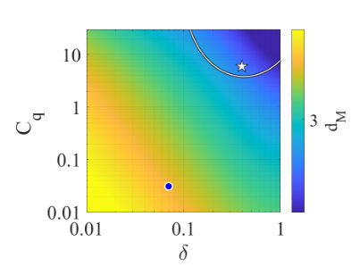
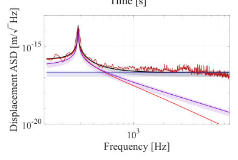
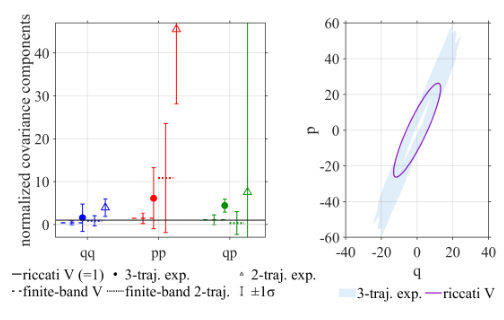
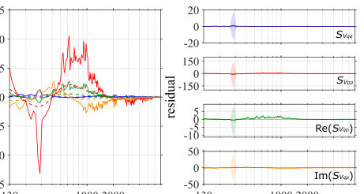
Summary. The paper introduces an unbiased estimator for the conditional covariance of macroscopic mechanical oscillators measured via continuous monitoring. By combining forward, future-likelihood, and smoothed trajectories, it overcomes systematic biases inherent in conventional retrodictive methods. This advancement is crucial for accurately characterizing quantum states, such as entanglement, in tabletop and gravitational-wave scale optomechanical systems.
Why it may be interesting. This work directly addresses measurement backaction and state estimation in large-scale quantum systems (optomechanics), providing a rigorous tool to test non-classical features like entanglement that are otherwise obscured by measurement noise or flawed estimators.
Main problem. Verifying the conditional covariance of macroscopic mechanical oscillators prepared via continuous measurements is difficult because conventional estimators can be biased due to physical dynamics like feedback damping.
Main result. The proposed three-trajectory estimator provides an exact unbiased estimate for the conditional covariance, showing a significant reduction in bias compared to conventional methods when applied to milligram-scale mirrors.
Method. The authors derive and apply an exact linear-Gaussian estimator by augmenting the retrodictive reconstruction with a smoothed trajectory, comparing it against standard two-trajectory estimators.
Model / system. The system involves macroscopic mechanical oscillators (e.g., milligram-scale mirrors) coupled to optical fields in optomechanics setups, modeled as a linear Gaussian process governed by state-space equations.
Key observables. Conditional Covariance ($V$), Logarithmic Negativity ($ ext{EN}$), and the covariance-space distance metric ($ ext{d}M$).
Important parameters / regimes. Milligram-scale mirror mass, gravitational-wave kg-scale test masses, feedback damping rates.
Assumptions / limitations. The method assumes a calibrated linear-Gaussian state-space model; it is not model-free tomography and relies on the structure of the underlying dynamics.
Figures summary. Figure 1 shows the bias ($ ext{d}M$) of conventional estimators vs. detuning/cooperativity. Figure 2 details an experimental record spectrum for a suspended mirror. Figure 3 compares three-trajectory estimates to Riccati predictions, and Figure 4 shows frequency-resolved covariance closure tests.
Paper structure. The paper establishes the difficulty with conventional estimators due to symmetry assumptions, introduces the novel three-trajectory estimator based on smoothing theory, validates it against known Riccati solutions using experimental data from an optomechanical cavity, and concludes by demonstrating its utility for entanglement testing.
Continuous measurements can prepare macroscopic mechanical oscillators in conditional quantum states, but their covariance is difficult to verify. The conventional retrodictive estimator assumes a forward--backward covariance symmetry and can be biased, because physical dynamics such as feedback damping reduces the observability of the state from future records. Here, we derive an exact linear-Gaussian estimator from causal, retrodictive, and smoothed trajectories. For a milligram-scale mirror, it agrees with a Riccati prediction based on parameters fixed independently, while the conventional estimate exhibits a large bias in the covariance-space metric, $d_M \sim 5$. Our method paves the way toward unbiased testing of macroscopic entanglement within a calibrated linear-Gaussian model, which will be applicable to tabletop mirrors as well as gravitational-wave kg-scale test masses.
Authors: Ludovico Tesser, Janine Splettstoesser
Type: theory · Category: statistical mechanics · PDF: https://arxiv.org/pdf/2607.06190v1
Analysis basis: full PDF text, analyzed in chunks
Topic relevance: 🔥 non-equilibrium dynamics 4/5 · non-equilibrium universality 3/5 · Keldysh / 2PI / non-Gaussian methods 2/5 · driven-dissipative phase transition 2/5 · Kondo & dissipative impurity 1/5 · analog quantum simulation 1/5 · correlated / nonlocal dissipation 1/5 · entanglement & information structure 1/5 · measurement-induced transitions 1/5 · methods for driven-dissipative 1/5 · quantum measurements 1/5
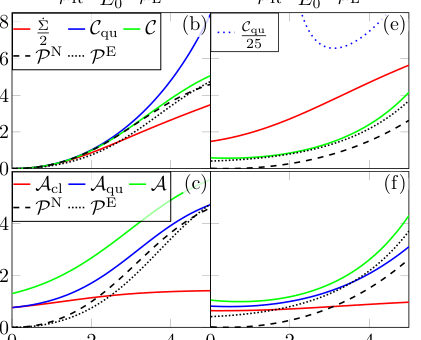
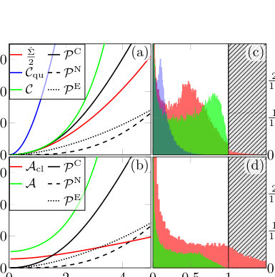
Summary. This work develops generalized uncertainty relations for quantifying the fundamental limits of precision when measuring various currents (energy, charge) in coherent quantum transport. By incorporating fluctuation theorems and analyzing strongly coupled regimes, the authors extend existing bounds to be valid far from equilibrium. This is crucial for understanding non-equilibrium energy dissipation and measurement constraints in advanced quantum devices like superconducting junctions.
Why it may be interesting. It provides rigorous, non-equilibrium bounds on measurement precision in quantum conductors, which is highly relevant for understanding energy/charge transport dynamics beyond simple linear response theory.
Main problem. The paper derives generalized thermodynamic and kinetic uncertainty relations for quantifying precision limits associated with arbitrary currents flowing through coherent, strongly coupled quantum systems out of equilibrium.
Main result. New bounds (TUR, KUR, and a combined TKUR) are established that remain valid far from equilibrium and extend beyond previous limitations restricted to particle or charge currents. These bounds show higher-order fluctuation contributions when strong coupling is present.
Method. The derivation relies on applying the Cauchy-Schwarz inequality to transport statistics, specifically utilizing properties derived from fluctuation theorems (e.g., forward-backward stochastic entropy).
Model / system. The analysis focuses on coherent fermionic transport in linear systems, illustrated using normal-normal (NN) and normal-superconducting (NS) hybrid junctions.
Key observables. Average current ($\langle \dot{Q} angle$), zero-frequency noise ($ ext{Var}[q]$), entropy production rate ($ ilde{\sigma}$), and stochastic activity ($a$).
Important parameters / regimes. Strong coupling regime, far from equilibrium, superconducting leads (Andreev reflections).
Assumptions / limitations. The derivation assumes the current statistics can be analyzed via scattering theory and that particle-particle interactions are negligible or treated in a mean-field manner.
Figures summary. Figure 1 compares precision limits for NN setups using various cost functions (TUR vs. KUR). Figure 2 compares charge, quasiparticle, and energy current precision limits across different cost function formulations in NS setups.
Paper structure. The paper builds from establishing the general framework for uncertainty relations based on transport statistics, deriving specific forms for TUR and KUR applicable to arbitrary currents, introducing a generalized Thermokinetic Uncertainty Relation (TKUR), and finally validating these results using superconducting hybrid structures.
We derive thermodynamic and kinetic uncertainty relations valid for arbitrary currents in coherent, strongly coupled, linear systems out of equilibrium. Exploiting properties of the transport statistics, in particular fluctuation theorems, we identify the relevant entropy production and activity that determine the cost of precision at the level of individual scattering events. The resulting bounds include higher-order fluctuations and remain valid far from equilibrium. We illustrate our results in normal and superconducting hybrid structures, and show that their predictiveness and validity range exceeds existing formulations.
Authors: Yoshitaka Miyahara, Taiki Haga
Type: theory · Category: disordered systems and neural networks · PDF: https://arxiv.org/pdf/2607.05860v1
Analysis basis: full PDF text, analyzed in chunks
Topic relevance: 🔥 non-equilibrium dynamics 4/5 · driven-dissipative phase transition 3/5 · methods for driven-dissipative 3/5 · non-equilibrium universality 3/5 · Frenkel-Kontorova 1/5 · Keldysh / 2PI / non-Gaussian methods 1/5 · analog quantum simulation 1/5



Summary. This work presents an unsupervised machine learning framework to classify nonequilibrium phases in sheared colloidal systems. By preprocessing raw structural data using Fourier transforms and feeding the results into an autoencoder followed by GMM, the authors successfully map out a robust phase diagram. This demonstrates that ML can effectively analyze complex, non-equilibrium many-body physics when guided by physically motivated representations.
Why it may be interesting. While focused on classical colloids, the methodology—using deep learning to extract low-dimensional representations of complex, non-equilibrium many-body states—is highly relevant for analyzing quantum dynamics simulations where phase space sampling is difficult.
Main problem. The primary challenge is unsupervised identification of nonequilibrium phases in particle systems, which are characterized by complex, spatially heterogeneous structures lacking long-range order.
Main result. The proposed autoencoder framework, when combined with Fourier preprocessing and GMM clustering, successfully maps the system's structural variations into distinct, robust clusters corresponding to known physical phases.
Method. The method involves transforming global spatial configurations into Fourier space, using these amplitudes as input features for an autoencoder for dimensionality reduction, followed by Gaussian Mixture Model (GMM) analysis on the latent space.
Model / system. The study uses a 2D binary charged colloidal system simulated under linear shear flow. Interactions are modeled by a DLVO-like potential combining WCA, screened Coulomb, and van der Waals forces.
Key observables. Fourier amplitudes ($\hat{ ho}_{m,n}$), latent space coordinates, cluster membership probabilities ($p_i$), Radial Distribution Functions (RDFs), and autoencoder reconstruction loss.
Important parameters / regimes. Coulomb interaction strength ($\phi$) and Peclet number ($Pe$, related to shear rate).
Assumptions / limitations. The crucial assumption is that preprocessing via Fourier transformation is necessary for the autoencoder to effectively capture phase-specific structural features, as direct application to raw data fails.
Figures summary. Figures illustrate the resulting nonequilibrium phase diagram vs. $(\phi, Pe)$, comparing machine learning cluster assignments with boundaries derived from RDF analysis and anomaly detection heatmaps.
Paper structure. The paper details the physical model (colloids under shear), introduces the ML framework (Fourier $ ightarrow$ Autoencoder $ ightarrow$ GMM), validates its results by showing consistency with traditional diagnostics (RDFs, loss), and compares different autoencoder architectures (FCNN vs. CNN).
Identifying nonequilibrium phases in particle systems remains a major challenge because they often exhibit complex and spatially heterogeneous structures without long-range order. Here, we develop an unsupervised machine-learning framework for classifying such nonequilibrium phases by integrating Fourier-based preprocessing, an autoencoder, and a Gaussian mixture model (GMM). Specifically, we transform global spatial configurations into Fourier space and use the amplitudes of Fourier coefficients as inputs to the autoencoder. This preprocessing suppresses spatial noise while preserving phase-specific structural features and physical interpretability. We demonstrate the effectiveness of this framework using a binary charged colloidal system under steady shear flow, where the competition between Coulomb interactions and shear gives rise to three nonequilibrium phases characterized by distinct local structures. The encoded latent space reveals well-separated clusters that are robustly identified by the GMM, enabling the construction of a nonequilibrium phase diagram based on cluster membership probabilities. The resulting phase boundaries are consistent with those independently obtained from radial distribution function analysis and unsupervised anomaly detection. These results demonstrate that autoencoder-based unsupervised learning provides an effective framework for identifying nonequilibrium phases in complex particle systems.
Authors: Dalin Boriçi, Nicolas Regnault, Cristiano Ciuti
Type: theory · Category: strongly correlated electrons · PDF: https://arxiv.org/pdf/2607.06298v1
Analysis basis: full PDF text, analyzed in chunks
Topic relevance: 🔥 analog quantum simulation 4/5 · 🔥 correlated cavity matter 4/5 · Tavis-Cummings & cavity-many-emitter 3/5 · Keldysh / 2PI / non-Gaussian methods 1/5 · correlated / nonlocal dissipation 1/5 · driven-dissipative phase transition 1/5 · exotic spin models in light-matter 1/5 · methods for driven-dissipative 1/5
Summary. This paper theoretically examines the effect of attractive, cavity-mediated interactions on the excitation gaps of Fractional Quantum Hall liquids. Using the composite-fermion framework, the authors calculate both neutral and charged gap shifts for $ u=1/3$ and $ u=1/5$. The key finding is a robust enhancement of the transport gap that scales predictably with system size and cavity field strength.
Why it may be interesting. This work directly bridges concepts from cavity QED (cavity coupling) into strongly correlated electron physics (FQH states), providing a quantitative prediction for how external electromagnetic environments can tune fundamental many-body properties like excitation gaps.
Main problem. The study investigates how attractive electron-electron interactions mediated by a cavity modify the excitation gaps of Fractional Quantum Hall (FQH) states.
Main result. Finite-size scaling analysis shows that the transport gap is enhanced quadratically with the electron number and the fourth power of the vacuum-field gradient. The high-$k$ magnetoroton gap also exhibits enhancement.
Method. The calculations utilize the composite-fermion (CF) framework, analyzing both neutral magnetoroton spectra and charged excitation gaps relevant to transport experiments.
Model / system. The system is a spin-polarized lowest-Landau-level model of FQH liquids ($ u=1/3, 1/5$) coupled to a single quantized cavity mode. The effective interaction potential modifies the Coulomb pseudopotentials.
Key observables. Neutral magnetoroton excitation spectrum and charged excitation gap (relevant to transport).
Important parameters / regimes. Filling factors ($ u=1/3, 1/5$), electron number ($N$), cavity vacuum-field gradient ($G$), and interaction range parameter ($L$).
Assumptions / limitations. The analysis assumes a spatially uniform cavity-field gradient; the CF framework is used as an approximation for the strongly interacting system.
Figures summary. Figures demonstrate quadratic scaling of the charge gap with $N$ (Fig. 1, 9), confirm the dependence on interaction range ($L/\sqrt{S}$) (Fig. 2, 11), and show thermodynamic extrapolation confirming finite limits for the gap shift (Fig. 3, 10).
Paper structure. The paper develops the effective Hamiltonian using CF theory, calculates expectation values of the cavity interaction, analyzes both neutral and charged excitation gaps, and employs finite-size scaling to extrapolate results to the thermodynamic limit.
We investigate how cavity-mediated attractive electron-electron interactions modify the excitation gaps of fractional quantum Hall states within the composite-fermion framework. We compute both the neutral magnetoroton excitation spectrum and the charged excitation gap relevant to transport experiments for the Laughlin $ν=1/3$ and $ν=1/5$ states. We consider a spin-polarized lowest-Landau-level model in which the interaction is mediated by a cavity mode with a spatially uniform vacuum-field gradient and a finite interaction range controlled by a long-distance cutoff. Finite-size scaling reveals that the transport gap is consistently enhanced by the cavity-induced interaction, with the gap enhancement scaling quadratically with the electron number and with the fourth power of the vacuum-field gradient. By contrast, the magnetoroton spectrum exhibits a richer dependence on the interaction range. The high-$k$ magnetoroton gap is enhanced for all interaction ranges considered, consistent with its close connection to the charged excitation gap, even with the long-range character of the interaction.
Authors: Nitay Ben-Shachar, Johannes Hofmann
Type: theory · Category: statistical mechanics · PDF: https://arxiv.org/pdf/2607.05540v1
Analysis basis: full PDF text, analyzed in chunks
Topic relevance: 🔥 non-equilibrium dynamics 4/5 · Keldysh / 2PI / non-Gaussian methods 3/5 · non-equilibrium universality 3/5 · driven-dissipative phase transition 2/5 · Kondo & dissipative impurity 1/5 · analog quantum simulation 1/5 · correlated / nonlocal dissipation 1/5 · methods for driven-dissipative 1/5
Summary. This work develops a kinetic theory framework to describe magnetotransport in electron gases within a Corbino disk. It identifies 'tomographic transport' as an anomaly arising from long-lived odd-parity Fermi surface modes, which modifies standard hydrodynamic predictions. The resulting theoretical description predicts distinct crossover regimes for magnetoresistance dependent on the magnetic field strength.
Why it may be interesting. While focused on condensed matter transport, the use of non-equilibrium statistical mechanics (kinetic theory) and the derivation of anomalous scaling laws provide rigorous theoretical tools applicable to understanding far-from-equilibrium dynamics in quantum systems.
Main problem. The study addresses 'tomographic transport' in clean electron gases, an anomalous transport mechanism not captured by standard hydrodynamic models.
Main result. Tomographic flow induces superballistic current injection at electrodes and enhances the magnetoresistance coefficient, which exhibits a non-monotonic dependence on magnetic field strength across three distinct regimes.
Method. The analysis employs matched asymptotic expansions of the kinetic equation, distinguishing between bulk behavior and near-electrode boundary layers.
Model / system. The system is an electron gas confined in a Corbino disk geometry. The theory models quasiparticle distribution functions using Fermi-liquid equations linearized around equilibrium.
Key observables. Magnetoresistance coefficient, azimuthal velocity profile u_theta(r), and electrode conductance G_e.
Important parameters / regimes. Odd-mode mean free path (l_o), even-mode mean free path (l_e), cyclotron radius (r_c), and the ratio of these lengths to device size L.
Assumptions / limitations. The analysis relies on systematic expansions in Knudsen numbers ($k_e, k_o$) and assumes that tomographic corrections are responsible for observed anomalous scaling.
Figures summary. Figures illustrate schematic transport paths showing boundary layers, profiles of velocity and potential across different magnetic field regimes (tomographic, hydrodynamic, Ohmic), and the non-monotonic dependence of magnetoresistance curvature on $1/r_c$.
Paper structure. The paper builds from the general kinetic equation by linearizing it and expanding in Knudsen numbers. It then solves for the bulk flow using matched asymptotic expansions, incorporating specific boundary conditions at the electrodes to derive corrections to transport coefficients like viscosity.
In clean electron gases at low-to-moderate temperatures, odd-parity modes of the Fermi surface are anomalously long-lived due to Pauli blocking, giving rise to ``tomographic transport'' that is not captured by a hydrodynamic model. Here we show that tomographic flow in a Corbino disk induces an extended boundary layer near electrodes with superballistic transport and enhanced slip velocity, which leads to a parametric enhancement of the quadratic magnetoresistance coefficient. The enhancement depends explicitly on the electrode curvature, allowing its strength to be controlled by the device geometry. The magnetoresistance coefficient reveals three distinct regimes as a function of magnetic field: a tomographic regime at weak fields; a hydrodynamic regime at intermediate fields, reached when the cyclotron radius becomes comparable to a large odd-mode mean free path; and a conventional Ohmic regime at large fields, reached when the cyclotron radius becomes comparable to the short even-mode mean free path. The tomographic regime is characterized by an anomalous dependence of the magnetoresistance on temperature and density, which may account for recent experimentally observed anomalous scaling of the electron viscosity.
Authors: Ruifeng Liu, Jianwen Zhou, Yejia Chen, Jiahang Chen, Hai-Jun Zhou
Type: theory · Category: statistical mechanics · PDF: https://arxiv.org/pdf/2607.06205v1
Analysis basis: full PDF text, analyzed in chunks
Topic relevance: 🔥 scars & prethermalization 4/5 · non-equilibrium universality 3/5 · driven-dissipative phase transition 2/5 · non-equilibrium dynamics 2/5 · Frenkel-Kontorova 1/5 · analog quantum simulation 1/5 · correlated / nonlocal dissipation 1/5 · exotic spin models in light-matter 1/5 · methods for driven-dissipative 1/5
Summary. This paper analyzes phase transitions in lattice spin models governed by severe kinetic constraints, such as the Fredrickson-Andersen model at K=1. Using numerical simulations, the authors determine critical densities where the system's connected structure collapses (percolation) and identify a separate crystal-to-glass transition in the ground states. The work provides quantitative results for these transitions on 2D and 3D lattices.
Why it may be interesting. While focused on classical statistical mechanics, the concept of quenched disorder and constrained dynamics shares conceptual links with studying decoherence or localization effects in open quantum systems.
Main problem. The study investigates thermodynamic phase transitions occurring in lattice spin systems that are subjected to severe, site-dependent kinetic constraints.
Main result. The giant connected component of the unfrozen subsystem collapses at critical initial densities ($ ho_c$), belonging to the universality class of site percolation. Additionally, a crystal-to-glass transition is found for ground states in 3D.
Method. The research relies on extensive numerical simulations and finite-size scaling analysis applied to analyze connectivity and ground state properties.
Model / system. The model is the Fredrickson-Andersen (FA) lattice spin system, specifically analyzed for the severely constrained case $K=1$. The system's dynamics are governed by local rules that freeze sites based on occupied nearest neighbors, leaving an 'unfrozen subsystem' whose properties are studied.
Key observables. Connectivity of the unfrozen subsystem (giant component fraction), size distribution of connected components ($n(s)$), and ground state order parameters.
Important parameters / regimes. Initial packing density ($ ho$), kinetic constraint parameter ($K=1$), and critical densities ($ ho_c$ for percolation, $ ho^*$ for crystal-glass transition).
Assumptions / limitations. The analysis is primarily restricted to the $K=1$ case; generalizations to higher $K$ or finite temperature are noted as future work.
Figures summary. Figure 2(a) shows the percolation transition of the giant component fraction vs. $ ho$, and Figure 2(b) illustrates the power-law size distribution of unfrozen sites near criticality.
Paper structure. The paper analyzes the system by first defining the kinetic constraints leading to frozen/unfrozen subsystems, then applying percolation theory to find the connectivity collapse ($ ho_c$), followed by analyzing ground state structural transitions (crystal-to-glass).
The Fredrickson-Andersen model with hyperparameter $K=1$ is a severely constrained kinetic lattice spin system, such that any site is temporarily blocked from changing its packing state (empty or occupied) if there is one or more occupied nearest neighbors. Starting from a completely random initial configuration with a fraction $ρ$ of sites being occupied, some of the sites may be permanently frozen to their initial state under this severe kinetic constraint. The remaining sites can switch states at least occasionally, and they form the unfrozen subsystem associated with the given initial configuration. In the present work we investigate thermodynamic phase transitions in such unfrozen subsystems of the two-dimensional square lattice and the three-dimensional cubic lattice by extensive numerical simulations. We demonstrate that the giant connected component of the unfrozen subsystem collapses at certain critical value $ρ_{c}$ of initial packing density, with $ρ_c = 0.2475$ for the square lattice and $ρ_c = 0.2809$ for the cubic lattice. This phase transition belongs to the same universality class of the conventional site percolation. We also observe that the ground states (densest packing configurations) experience a continuous crystal-to-glass phase transition at the critical value $ρ^* = 0.1423$ of initial packing density for the cubic lattice. For the two-dimensional square lattice we argue that long-range crystalline order is destroyed in the ground states as long as the initial packing density $ρ$ is positive.
Authors: Christian H. Christiansen, Kasper H. Nielsen, Alisha Nanwani, Sebastiano Guaraldo, E. Laurits Piehorsch, Arnulf J. Snedker-Nielsen, Magnus L. Madsen, David R. Gongora, Emanuele Brusaschi, Rodrigo A. Thomas, Ian Farrer, D. Hieu Nguyen, Georgios Kountouris, Beñat M. d. A. Jokisch, Mohammad Khalifa, Claudia Piccinini, Mathias Ø. Augustesen, Hugo Laurell, Kokeb B. Benti, Maria S. Gonzalez, Amedeo Carbone, Elvedin Memisevic, Sangeeth Kallatt, Mark K. Svendsen, Marianne E. Bathen, Lasse Vines, Peter Granum, Peter Krogstrup, Stefano Paesani
Type: experiment · Category: quantum information and computing · PDF: https://arxiv.org/pdf/2607.06272v1
Analysis basis: full PDF text, analyzed in chunks
Topic relevance: 🔥 QC/QI experiment 4/5 · quantum optics experiment 3/5 · spintronics-quantum-optics interface 3/5 · analog quantum simulation 1/5 · exotic spin models in light-matter 1/5 · interference shaping light 1/5 · quantum measurements 1/5
Summary. The research demonstrates a method using molecular-beam epitaxy (MBE) to create single T centres in silicon-on-insulator wafers. This epitaxial approach significantly improves the coherence of photon emission from these defects by narrowing the optical linewidth down to 30 MHz. These results establish a highly promising, scalable platform for developing quantum photonic devices.
Why it may be interesting. This work directly addresses the engineering challenge of creating high-quality quantum light sources on CMOS-compatible silicon platforms by controlling material defects epitaxially, which is central to solid-state quantum networking and computing architectures.
Main problem. The primary challenge is achieving coherent photon emission from spin-photon interfaces based on silicon quantum emitters for scalable quantum computing.
Main result. Epitaxially incorporating single T centres in silicon-on-insulator yields significantly narrower optical linewidths (as low as 30 MHz) compared to standard ion-implanted samples, establishing a robust platform for coherent spin-photon interfaces.
Method. The authors utilized high-purity molecular-beam epitaxy (MBE) to grow and incorporate single T centres into SOI wafers, followed by advanced optical characterization techniques like hole-burning and second-order correlation measurements.
Model / system. The physical system is a single T centre defect engineered epitaxially within silicon-on-insulator (SOI) wafers, coupled to nanophotonic waveguides. The T centre acts as the quantum emitter whose spin state couples to emitted photons.
Key observables. Optical linewidths (homogeneous: 30 MHz vs. hundreds of MHz for implanted), single-photon emission confirmation ($g^{(2)}(0) = 0.26(3)$), and spectral diffusion decay times ($\sim 34 \mu ext{s}$).
Important parameters / regimes. The epitaxial process involves specific MBE growth steps (e.g., $\delta$-doping, low-temperature deposition) to achieve nanometer-scale defect control.
Assumptions / limitations. It is assumed that the tailored MBE process successfully mitigates material imperfections responsible for spectral wandering and homogeneous broadening compared to implantation methods.
Figures summary. Figures compare PL spectra (ensemble vs. single emitter), show $g^{(2)}(\Delta t)$ measurements confirming single-photon emission, and present hole-burning results comparing linewidths between epitaxial and implanted samples.
Paper structure. The paper details the MBE growth process for T centres in SOI, presents characterization using PL and $g^{(2)}$ measurements to confirm single emitters, and critically compares the resulting optical coherence properties (linewidths) against previously achieved ion-implanted samples.
Spin-photon interfaces based on silicon quantum emitters offer a scalable platform for quantum computing and networking. However, achieving coherent photon emission remains a primary challenge due to stringent material quality requirements. To overcome this, we utilise high-purity molecular-beam epitaxy (MBE) to epitaxially incorporate single T centres in silicon-on-insulator (SOI) wafers. We demonstrate single T-centre emission coupled to a nanophotonic waveguide and observe significant suppression of homogeneous broadening, yielding optical linewidths as narrow as 30 MHz using natural silicon for crystal growth. These results establish epitaxial T centres as a robust foundation for coherent spin-photon interfaces in silicon quantum photonics.
Authors: Marcelo Jaime, Franziska Weickert
Type: both · Category: strongly correlated electrons · PDF: https://arxiv.org/pdf/2607.06028v1
Analysis basis: full PDF text, analyzed in chunks
Topic relevance: 🔥 analog quantum simulation 4/5 · exotic spin models in light-matter 3/5 · spintronics-quantum-optics interface 3/5 · driven-dissipative phase transition 1/5 · entanglement & information structure 1/5 · non-equilibrium dynamics 1/5
Summary. This work explores the magnetic properties of BaCuSi2O6, focusing on its transition into an easy-plane antiferromagnetic state under high magnetic fields. This ordered state is theoretically interpreted as a Bose-Einstein Condensate of magnons. The research highlights how this material serves as a crucial experimental playground for testing advanced concepts in quantum many-body physics.
Why it may be interesting. It provides a concrete solid-state platform where quantum many-body phenomena like BEC can be accessed and tested using extreme external fields, bridging condensed matter magnetism with fundamental quantum physics concepts relevant to AMO systems.
Main problem. The study investigates the Bose-Einstein Condensation (BEC) of magnons in the magnetic insulator BaCuSi2O6 under high external magnetic fields.
Main result. The material exhibits a transition into an easy-plane XY antiferromagnetic state, which is modeled as a realization of magnon BEC. The dimensionality of this condensation depends on doping (3D vs 2D limit).
Method. The research combines experimental techniques like high-field magnetometry and diffraction with theoretical modeling to analyze quantum many-body physics.
Model / system. The system is BaCuSi2O6, a layered cyclosilicate containing magnetic Cu2+ dimers ($S=1/2$). Its magnetic behavior transitions from a quantum paramagnet to an ordered state under high fields.
Key observables. Magnetic ordering transition, easy-plane (XY) antiferromagnetic state, magnon condensation signature, lattice parameters, and structural phase transitions.
Important parameters / regimes. High magnetic fields (23–49 Tesla), sub-liquid Helium temperatures, and doping levels (e.g., Sr substitution).
Assumptions / limitations. The material's behavior is successfully modeled by treating the magnon condensation as an ideal Bose gas in the XY limit.
Figures summary. Not specified by notes; focus is on phase diagrams and structural/magnetic transitions across various fields and temperatures.
Paper structure. The paper reviews decades of work, starting from material synthesis (solid-state, flux methods) to detailed characterization (XRD, INS), culminating in the theoretical framework for magnon BEC and its dimensional analysis via doping.
Han Purple, a pigment first obtained in ancient China, is one of the earliest known synthetic pigments. Also naturally occurring, as a mineral, it is known as colinowensite (Cwn). Its chemical formula is BaCuSi$_{2}$O$_{6}$, and its structure is a layered cyclosilicate in which magnetic Cu$^{2+}$ ions (S = 1/2) form dimers arranged on a square lattice, making it also the first known synthetic metal dimer compound. Most interesting magnetic properties arise from a strong intradimer spin coupling, accompanied by weaker interdimer interactions within and between Cu-dimer layers. In zero or small magnetic fields, BaCuSi$_{2}$O$_{6}$ remains a quantum paramagnet. However, under high magnetic fields between 23 and 49 Tesla -- about a million times stronger than Earth's magnetic field -- it undergoes magnetic ordering at subliquid Helium temperatures into an almost ideal easy-plane (XY) antiferromagnetic state regarded as a realization of a Bose-Einstein condensate of magnons. Within this experimentally accessible field range, BaCuSi$_{2}$O$_{6}$ serves as an extraordinary playground for testing predictions of quantum many-body physics.
Authors: Xinyu Tang, Yi-hsin Lin, Yan Zhu, Tailong Xiao, Yuxuan Du, Giulio Chiribella, Qiongyi He, Ya-dong Wu
Type: both · Category: quantum information and computing · PDF: https://arxiv.org/pdf/2607.06232v1
Analysis basis: full PDF text, analyzed in chunks
Topic relevance: 🔥 QC/QI experiment 4/5 · quantum measurements 3/5 · quantum optics experiment 3/5 · Tavis-Cummings & cavity-many-emitter 1/5 · measurement-induced transitions 1/5 · methods for driven-dissipative 1/5
Summary. The paper presents a novel machine learning framework designed to reconstruct the Wigner function of continuous variable quantum states from limited measurement data. By developing specialized regression models and deep neural networks, the authors overcome the computational bottleneck associated with dense phase-space sampling. This method is successfully demonstrated on both simulated and real experimental data from circuit-QED systems, showing superior performance for characterizing complex states like GKP code states.
Why it may be interesting. This work provides a powerful, scalable tool for characterizing complex quantum states in CV systems that are difficult to measure fully, directly impacting error correction verification and state characterization in quantum optics experiments.
Main problem. The core challenge is reconstructing continuous Wigner functions of CV quantum states from sparse, finite-point measurements in phase space.
Main result. A deep learning framework was developed that accurately reconstructs Wigner functions for complex states like GKP code states using significantly fewer measurements than conventional estimation techniques, even on experimental data.
Method. The authors propose a machine learning approach, utilizing both specialized regression models (for sparse-support states) and general Deep Neural Networks (DNNs) to act as continuous function surrogates for the Wigner function.
Model / system. The work focuses on Continuous Variable (CV) quantum systems, characterized by bosonic harmonic oscillators. Experimental demonstrations are performed using superconducting circuit quantum electrodynamics (circuit-QED) platforms, particularly characterizing GKP code states.
Key observables. Wigner function $W_ ho(\alpha)$ and the characteristic function $C_ ho(\alpha)$.
Important parameters / regimes. The effective Hilbert-space dimension ($d$), measurement complexity scaling ($\mathcal{O}(\log d)$), and reconstruction overlap (e.g., $>0.98$).
Assumptions / limitations. Measurements only provide finite pointwise samples of a continuous function; the regression model assumes state sparsity in a known basis.
Figures summary. Figures illustrate various CV states whose Wigner functions can be learned, and show comparisons between DNN predictions versus traditional regression models when reconstructing measured Wigner functions for GKP code states.
Paper structure. The paper introduces the problem of phase-space reconstruction, details two primary ML frameworks (sparse regression vs. general DNN), demonstrates efficiency gains on simulated data (GKP states), and validates the method using experimental measurements from a circuit-QED system.
Wigner function learning is a central tool for characterizing continuous variable quantum systems. A fundamental challenge in this setting is to infer a continuous phase-space function from sparse pointwise measurement data, a task that becomes increasingly demanding as the effective dimension enlarges. Here, we develop a general machine learning framework to reconstruct Wigner functions directly as continuous functions from sparse phase-space data. For states with sparse Fock-space or coherent-state representations, such as binomial code states and cat states, we devise provably efficient regression models whose measurement complexity scales only logarithmically with the effective Hilbert-space dimension. For more general states, such as the Gottesman-Kitaev-Preskill (GKP) states, we design a deep learning model that reconstructs the Wigner function from sparse measurements and generalizes to arbitrary phase-space resolution. We demonstrate the broad applicability of our framework on both simulated data and experimental data from a circuit quantum electrodynamic (circuit-QED) system. Interestingly, on experimental data, we find that our model reconstructs Wigner functions of GKP code states across multiple rounds of quantum error correction and identifies the dominant error process using significantly fewer measurements than conventional estimation techniques.
Authors: Pierre Brosseau, Jiawei Wang, Giorgio Adamo, Anton N. Vetlugin, Cesare Soci
Type: experiment · Category: quantum information and computing · PDF: https://arxiv.org/pdf/2607.06047v1
Analysis basis: full PDF text, analyzed in chunks
Topic relevance: 🔥 QC/QI experiment 4/5 · quantum measurements 3/5 · quantum optics experiment 3/5 · interference shaping light 1/5 · measurement-induced transitions 1/5 · spintronics-quantum-optics interface 1/5
Summary. The paper presents a novel, monolithic metal-superconductor nanowire detector array that integrates polarization selectivity directly into the detector structure using plasmonic metamaterials. By arranging four specialized pixels, the device performs on-chip, high-fidelity quantum state tomography of single photons' polarization states. This breakthrough removes reliance on external optics, paving the way for scalable photonic quantum circuits.
Why it may be interesting. This work directly addresses hardware limitations in quantum optics by integrating complex quantum measurement functionality (polarization analysis) onto the detector chip itself, which is crucial for building scalable photonic quantum processors.
Main problem. The scaling of photonic quantum networks requires precise, integrated characterization of single-photon polarization states without bulky external optics.
Main result. The developed monolithic detector array achieves intrinsic full polarization selectivity, enabling continuous polarization state tomography with an ensemble average fidelity exceeding 98%.
Method. The authors fabricated a four-pixel metal-superconductor nanowire array where co-fabricated gold plasmonic metamaterials induce polarization-dependent resonant absorption in the superconducting nanowires.
Model / system. The system is a monolithic, self-aligned M-SNSPD array containing U-shaped and S-shaped nanowires. These structures act as integrated polarizers by exploiting structural anisotropy (linear) and chirality (circular).
Key observables. Ensemble average fidelity (>98%), count rates following Malus's law, divergence in reflection spectra for different polarization components, and the reconstructed density matrix ($ ho_{out}$).
Important parameters / regimes. High-count rate operation, low dark count rates, visibility ($V$), and the required complete basis set size (four pixels).
Assumptions / limitations. The approach assumes that the gold overlayer acts as a hard etch mask for self-alignment, and minor deviations are attributed to fabrication imperfections.
Figures summary. Figures illustrate the four-pixel array mapping to the Poincaré sphere; SEM images confirm polarization-dependent absorption mechanisms (U/S shapes); and theoretical plots show fidelity convergence limited by visibility ($V^{-2}$) and dimensionality constraints.
Paper structure. The paper progresses from identifying the need for integrated polarimetry, detailing the M-SNSPD design using plasmonics, demonstrating single-pixel polarization measurements (linear/circular), scaling up to a four-pixel array, and finally quantifying state tomography fidelity convergence across various input states.
Light polarization is a primary degree of freedom for encoding quantum information. The scaling up of photonic quantum networks and computer architecture depends crucially on its precise characterization. This is typically achieved by placing external waveplates, polarizers, moving mounts, and recently metasurfaces, on top of the detectors. All these solutions complicate integration and scaling. Here we break convention with traditional architecture and present a monolithic, self-aligned metal-superconductor nanowire single photon detector (M-SNSPD) possessing intrinsic full polarization selectivity. Gold nanowires, co-fabricated atop NbTiN superconducting nanowires within the same lithographic footprint, act as polarization-selective plasmonic metamaterials inducing resonant absorption in the NbTiN. U-shaped wires provide linear polarization selectivity, while S-shaped meanders distinguish circular polarization, while retaining the high-count rates and low dark count rates of conventional SNSPDs. By arranging them into a four-pixel array we realize simultaneous projection onto four polarizations and demonstrate continuous polarization state tomography with an ensemble average fidelity exceeding 98%. Our approach opens new avenues towards scalable detector arrays with integrated plasmonic functionalities, for single photon polarimetry, imaging and spectroscopy.